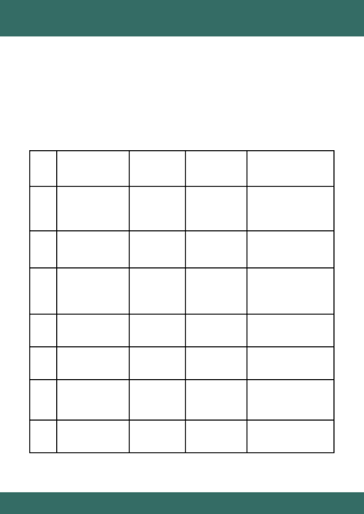
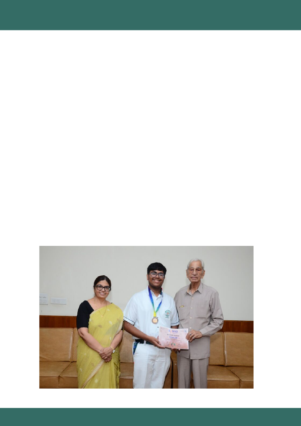
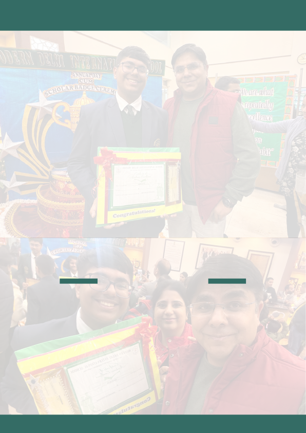

+91 9650892117
linkedin.com/in/ikshitsethi
ikshitsethi01@gmail.com
ANNUAL REPORT
2025
IKSHIT SETHI
+91 9650892117
linkedin.com/in/ikshitsethi
ikshitsethi01@gmail.com
ANNUAL REPORT
2025
IKSHIT SETHI
T A B L E O F C O N T E N T S
IKSHIT SETHI’S ANNUAL BOOK OF ACHIEVEMENTS 2025
Page 2
No.
Section Name
Page Numbers
1
Cover Page
1
2
Table of Contents
2
3
Preface to the Comprendium
3-4
4
Letter from the Author
5-6
5
Information about the Author
7-8
6
Academics Section
9-23
7
Model United Nations Record
24-26
8
Honors and Awards
27-28
9
Project Gallery
29-33
10
Experience Log
34-49
11
Merit Journal
50-124
12
Closing Remarks
125-126
13
Ending Cover Page
127
P R E F A C E
The Ikshit Sethi’s Annual Book of Achievements 2025
is conceived as a
formal record of merit, authority and institutional contribution during a
defining academic year. It is not celebratory literature nor a narrative of
participation. It is a documentary account of responsibility assumed,
standards upheld and outcomes delivered across academic, diplomatic,
adjudicatory and leadership domains. Each entry within this book is
grounded in verifiable action and measurable impact and written with
restraint, legality and constitutional discipline.
The year 2025 represents a phase of consolidation rather than emergence.
By this stage, Ikshit Sethi functioned not solely as a learner but as an
organiser, evaluator, delegate leader, legal advisor and academic competitor
operating within structured systems. Whether within classrooms,
international style conferences, institutional committees or competitive
examinations, his role consistently extended beyond presence into
governance, adjudication and capacity building. This book records that
transition from individual excellence to institutional relevance.
This volume has been compiled to serve multiple purposes. It stands as a
personal archive of achievement, a reference document for academic and
institutional scrutiny and a long term record suitable for formal
submissions, selections and historical documentation. The language
employed avoids exaggeration and sentiment. Authority is established
through scale, position and responsibility rather than descriptive
ornamentation.
The chapters that follow document the 2025 record thematically and
chronologically, beginning with academic merit and scholarship distinction,
followed by leadership within Model United Nations ecosystems,
adjudicatory and executive board service, conference administration and
legal advisory roles, competitive achievements at national and international
levels and concluding with recognitions and
IKSHIT SETHI’S ANNUAL BOOK OF ACHIEVEMENTS 2025
Page 3
formal appointments. Together, they present a coherent account of
competence exercised with consistency and discipline.
At its core this book resonates with the enduring insight of Aristotle that
excellence is never an act but a habit formed through repeated choice and
moral discipline. It echoes Max Weber’s conception of vocation where
responsibility is not an accessory to talent but its defining proof. The record
preserved here reflects the belief articulated by Edmund Burke that society
advances when individuals accept the weight of duty without expectation
of applause. Each documented role affirms that merit reaches its highest
form when it serves institutions larger than the self and when personal
advancement is inseparable from public trust. This perspective transforms
achievement from a private triumph into a civic contribution making the
reader confront the deeper question not of how much was achieved but of
how responsibly power was exercised.
Equally profound is the philosophical inheritance drawn from Marcus
Aurelius who held that what we do now echoes in the structure of our
character forever. This volume stands as a reminder of Hannah Arendt’s
warning that action without record dissolves into silence and loses its moral
force. By committing these acts to writing the book asserts that memory
itself is a form of justice. It invites reflection on the idea advanced by John
Rawls that fairness and consistency are the true measures of legitimacy.
What unfolds across these pages is therefore not only a chronicle of a year
but an affirmation that disciplined effort creates obligation forward. The
reader is left with an awakening realization that documented excellence is
not an endpoint but a moral contract with the future demanding that every
success sets a higher threshold of integrity to be met again and again.
With this preface, the Book of Achievements formally opens.
The pages
that follow stand as a precise record of performance, leadership and
service rendered within defined systems of evaluation and accountability.
Each section is intended to be read not in isolation but as part of a
continuous trajectory of responsibility and merit.
IKSHIT SETHI’S ANNUAL BOOK OF ACHIEVEMENTS 2025
Page 4
A U T H O R ’ S N O T E
I have authored this
Book of Achievements
to serve as a formal and
accountable record of work undertaken and responsibility exercised by me
during the calendar year 2025. This document is not intended to persuade,
embellish or self certify merit. It exists to document fact, position, scale
and outcome within structured academic and institutional environments.
Every entry contained herein reflects an act performed, a role discharged or
an authority exercised within defined systems of evaluation.
My purpose in
writing this statement is to clarify intent, method and standard.
I approach this record from the standpoint of accountability rather than
recognition. Throughout 2025, my engagement across academic
institutions, competitive platforms and conference based diplomatic
simulations was undertaken with the understanding that authority carries
obligation and leadership carries consequence. This book therefore records
not participation but stewardship. Where positions were assumed, they
were accompanied by responsibility for fairness, process and institutional
credibility. Where competitive results are recorded, they are presented as
outcomes of sustained discipline rather than isolated performance.
This volume has been prepared with deliberate restraint in language and
structure. I have consciously avoided narrative excess. I have rejected
celebratory framing in favour of verifiable documentation. Titles are
included only where formally conferred. Achievements are contextualised
by scale, jurisdiction and function. No claim within this book stands without
structural relevance. My objective is not to elevate myself but to
demonstrate consistency of competence within systems that demand
rigour.
I recognise that achievement without continuity lacks institutional value.
For this reason, I emphasise progression across the year, tracing how earlier
responsibilities informed later authority and how experience
IKSHIT SETHI’S ANNUAL BOOK OF ACHIEVEMENTS 2025
Page 5
translated into governance capacity. Academic excellence, leadership
within Model United Nations ecosystems, adjudicatory service and
organisational advisory roles are presented as interconnected domains
rather than discrete accomplishments. Each section builds upon the
previous to reflect growth anchored in structure.
I further affirm that the work documented herein was conducted with
respect for constitutional values, procedural fairness and intellectual
honesty. Whether operating within academic evaluation frameworks or
conference adjudicatory settings, I maintained fidelity to rules, mandates
and ethical boundaries. Decisions taken were guided by principle rather
than convenience and by institutional interest rather than personal
advancement.
Finally, I intend for this Book of Achievements to function as a living
reference rather than a closed narrative. While it records a specific year, it is
written with the understanding that merit is cumulative and responsibility
expands over time. This document may therefore be read as a foundation
upon which future records will build.
I submit this record in good faith as a true and complete account of work
performed and authority exercised by me during the year 2025.
Yours Truly,
Mr. Ikshit Sethi
+91 9650892117
ikshitsethi01@gmail.com
https://linkedin.com/in/ikshitsethi
IKSHIT SETHI’S ANNUAL BOOK OF ACHIEVEMENTS 2025
Page 6
A U T H O R I N F O
100% Scholar MDIS89 | CA at eDC & TEDx IIT Delhi | President
- TVC | IT Director - Veritas Group | Editor - JII | Writer on
Medium & Ors | MUNer (65+ Experience) | Awardee at IMO23 &
IMO24 (AIR 1, 60/60), IOQM25, NSTSE24
I, Ikshit Sethi, am currently a Grade X 100% Merit Scholarship student at Modern
Delhi International School, Sector 89, Faridabad. I am committed to excelling in
both academics and extracurricular pursuits. I am an awardee at the following
Academic Competitions/ Examinations:
- Scholarship & Admission Test (MDIS89) — 100% Scholarship & Highest Awardee
- Sh. Gopal Sharma Scholarship Test (MVN17) — 100% Scholarship
- XAT 2025 (NCR Rank 7, Cash Prize of
₹
11,000)
- TALLENTEX 2025 (AIR 109, Maximum Scholarship — 90%, Net Waiver of
₹
2,31,600)
- TALLENTEX 2024 (AIR 138, Maximum Scholarship — 90%, Net Waiver of
₹
93,000)
- IOQM 2025 (Qualified for RMO, National & Regional Merit Winner)
- IOQM 2024 (National Merit Winner)
- NSEJS 2024 (98%ile+, Cleared MAS, Centre Topper, School Rank 1)
- IMO 2024 (Level 2 Perfect Score: 60/60)
- IMO 2023 (Perfect Score: 60/60, International Rank 1)
- ICSO 2024 (99%ile+, International Rank 18, Silver Zonal Medal, School Topper)
- NSO 2024 (99%ile+, International Rank Below-175)
- NSTSE 2023 (AIR 143)
- NSTSE 2024 (AIR 167)
- FTRE 2024 (100% Scholarship,
₹
1,00,000 Cash Prize)
- National Space Innovation Challenge 2023 (5/5 Stars)
- Aryabhatta Interschool Mathematics Competition 2024 (AIR 11)
I am currently serving working tenure as:
Campus Ambassador at: TEDx IIT Delhi and eDC IIT Delhi
IKSHIT SETHI’S ANNUAL BOOK OF ACHIEVEMENTS 2025
Page 7
Chief Technical Officer at:
- DotStreams Lab
Content/Publication Writer at:
- Dialogue & Discourse (Medium Publication)
- Predict (Medium Publication)
- E³ - Entertain Enlighten Empower (Medium Publication)
- Uncover Headlines (Media Organisation)
- Jaagrukta (Media Organisation)
- Journal of Independent Inquiry (Publication)
Director of Information Technology at:
- The Veritas Group
- Commit Tea Organisation
Volunteer at:
- Kritagya Foundation
- Regia Foundation (Advisor)
Developer at: MUNify
Served as:
- Deputy Director General @ The Solace Summit
- Assistant Secretary General @ Mosaic MUN
- Executive Director @ NOIR MUN
As the Head Delegate of my school's Model United Nations team, I lead my peers
in representing our institution at multiple conferences. Individually, I've done
over 65+ conferences until date as a participant and presided over 15+ as the
Executive Board (part of Judge Panel). Beyond Model UNs, my fascination with
law propels me towards rigorous exploration of the United States Constitution,
constitutional litigation, and the broader frameworks of International Law.
I have authored multiple Research Papers and Legal Analysis Papers focusing on
critical legal issues.
IKSHIT SETHI’S ANNUAL BOOK OF ACHIEVEMENTS 2025
Page 8
IKSHIT SETHI’S ANNUAL BOOK OF ACHIEVEMENTS 2025
A C A D E M I C S
The academic phase of this Annual Compendium
records performance
within formal systems of evaluation, merit based competition and
institutional benchmarking. It reflects not only numerical attainment but
intellectual discipline, consistency of effort and the ability to perform
under rigorously monitored academic frameworks. This section documents
achievements earned through structured assessment rather than
discretionary recognition and therefore stands as a foundational pillar of
the 2025 record.
Throughout the year, Ikshit Sethi demonstrated exceptional command over
curriculum, examination oriented strategy and conceptual clarity across
disciplines. His academic record during this phase is marked by sustained
excellence, competitive ranking and scholarship level distinction,
positioning him at the forefront of institutional performance metrics. These
achievements are presented with context, scale and significance to
accurately reflect their standing within the academic ecosystem.
The subsections that follow will individually document each academic
milestone, explaining both the nature of the achievement and the
distinction it represents. Together, they establish a clear narrative of
scholastic authority and intellectual leadership exercised consistently
throughout the year.
International Mathematics Olympiad
(SOF) — Gold Medal of Excellence
In January of 2025, Ikshit Sethi achieved a remarkable milestone in the
International Mathematics Olympiad conducted by the Science Olympiad
Foundation, earning the prestigious Gold Medal of Excellence. This accolade
not only signifies mastery over complex mathematical concepts and
problem solving at an advanced level but also reflects his unwavering
dedication, analytical precision and ability to perform under competitive
Page 9
international standards. The award positions him among the top-performing
students globally and serves as a testament to his sustained intellectual
rigor and commitment to scholastic distinction.
Further elevating this achievement, Ikshit secured an
International Rank of
100
, placing him within the upper echelon of participants worldwide. His
performance qualified him for
Level 2
, marking the continuation of his
journey in competitive mathematics at the international level. This
distinction underscores not only his conceptual strength but also his
capacity to engage with high-pressure evaluation systems and emerge with
consistent excellence, reinforcing his status as a leading figure in academic
achievement for the year 2025.
IKSHIT SETHI’S ANNUAL BOOK OF ACHIEVEMENTS 2025
Quantum Physics Research on Cellular
Quantum Tunnelling — Research Paper
Endorsed by Rudolf Allemann and
Accepted in Multiple Journals
Ikshit Sethi’s groundbreaking research achievement has been formally
endorsed by Rudolf Allemann, Vice President of Cardiff University, UK,
recognizing the scientific rigor, originality and interdisciplinary significance
of his work. In 2025, he, alongside Mr. Ishaan Anand, authored a 33-page
research paper titled "Probability of Quantum Tunnelling by Cell Organelles
Across Different Types of Cells." Comprising 6,125 words of rigorous
analysis, the paper investigates the remarkable intersection of quantum
mechanics and cellular biology. The research explores the potential for cell
organelles to exhibit quantum tunnelling, a phenomenon traditionally
observed in subatomic particles, and applies it to biological systems with
methodological precision. The paper has been accepted for publication in
the International Journal of Multidisciplinary Educational Research, the
International Journal For Multidisciplinary Research and the International
Journal of Research and Analytical Reviews, highlighting its broad academic
recognition. The study meticulously establishes the conditions under which
Page 10
tunnelling can occur within cellular structures, deriving wave functions for
individual organelles and mapping potential gradients and boundary widths
across various cell types. By doing so, Ikshit Sethi and his co-author present
an unprecedented quantitative model of quantum behaviour in biological
systems. The research bridges gaps between quantum physics and
molecular biology, contributing valuable insights into how fundamental
physical principles can influence complex living systems. This work
represents one of the few student-led explorations in this interdisciplinary
domain at an international level, setting a benchmark for future
investigations and reinforcing Ikshit’s reputation as a pioneering young
researcher.
This research achievement further underscores Ikshit Sethi’s ability to
engage with primary scientific literature and integrate diverse contributions
from pioneering scientists. He credits foundational work by Jennifer L Smith
of Tarrant County College and Kochurani K Johnson of Harvard Medical
School on protein folding and quantum tunnelling, as well as Harvey Lodish
of MIT, whose studies influenced key analytical methods. Additional
references, including early bacteriology studies by Buchanan and Gibbons
and data from the National Center for Biotechnology Information, were
used to substantiate and contextualise the findings. The endorsement by
Rudolf Allemann affirms the originality and scientific value of the work and
places it in the broader context of advanced research in quantum biology.
Ikshit Sethi’s role in this publication highlights his exceptional capacity for
independent inquiry, interdisciplinary reasoning, and academic
collaboration. Beyond the formal research process, he actively sought
feedback, refined methodology, and demonstrated a dedication to learning
and peer engagement. His ORCiD Researcher ID 0009 0005 8603 4619
formally establishes him as a recognised contributor to the global scientific
community. This achievement not only represents a significant personal
milestone but also advances the discourse on quantum biology, positioning
Ikshit as a pioneering student researcher with extraordinary promise for
future contributions in both physics and life sciences.
IKSHIT SETHI’S ANNUAL BOOK OF ACHIEVEMENTS 2025
Page 11
IKSHIT SETHI’S ANNUAL BOOK OF ACHIEVEMENTS 2025
LogIQids Mental Aptitude Olympiad 24-25
— Final Stage Qualification
Ikshit Sethi achieved a remarkable milestone in the First Stage of the Mental
Aptitude Olympiad 2024-2025, conducted by LogIQids in collaboration with
Techfest, IIT Bombay. Demonstrating exceptional critical thinking and
problem-solving abilities, he secured a place within the top 2% of
participants, outperforming 1,26,112 students across the country and
achieving a zonal rank of 36 in the Northern Region. This achievement not
only highlights his analytical precision and aptitude for complex reasoning
but also reflects his consistent dedication to developing the 21st century
skills necessary for holistic intellectual growth.
The significance of this accomplishment is further reinforced by formal
recognition from Mr. Mikin Lala, Founder of LogIQids, who remarked on
Ikshit’s performance as a demonstration of holistic development and
outstanding problem-solving capacity. With this qualification, Ikshit earned
the opportunity to appear for the Final Stage of the Olympiad, representing
both his school and region at a national level. This recognition stands as a
testament to his ability to excel under competitive conditions, further
establishing his position as a leading young academic achiever in 2025.
National Level Science Talent Search
Examination (NSTSE) 2024-2025 — Class
Rank 1 and Gold Medal
In 2024-2025, Ikshit Sethi achieved the distinction of being the Class Topper
in the National Level Science Talent Search Examination (NSTSE), an
examination renowned for its rigorous evaluation of conceptual
understanding, analytical reasoning, and critical thinking skills in science
and mathematics. Conducted annually at a national scale, NSTSE assesses
students from Class 1 through 12 across India, benchmarking their
performance against peers at the state and national level. The examination
Page 12
evaluates proficiency in subjects including Mathematics, Physics,
Chemistry, Biology and Critical Thinking, providing a comprehensive
measure of a student’s scientific aptitude and problem-solving capabilities.
Ikshit secured an
All India Rank of 167, a State Rank of 13, and achieved the
highest distinction in his class
, earning the Gold Medal of Excellence along
with a Certificate of Appreciation. His individual subject scores were
exceptional, including ranking 1 in Critical Thinking, 9 in Physics, 10 in
Chemistry, 10 in Biology and 23 in Mathematics, demonstrating balanced
expertise across both theoretical and analytical domains. This achievement
reflects not only his mastery of academic concepts but also his ability to
apply knowledge with precision under the high-pressure, competitive
conditions of a national-level examination.
By excelling in NSTSE, Ikshit
further solidifies his position as a leading young scholar in India and a
model of intellectual rigor and consistency.
IKSHIT SETHI’S ANNUAL BOOK OF ACHIEVEMENTS 2025
National Standard Examination in Junior
Science (NSEJS) 2024 — Center Topper
and National 98th Percentile
Ikshit Sethi distinguished himself in the National Standard Examination in
Junior Science (NSEJS), one of India’s premier examinations designed to
identify and nurture scientific talent among students from Classes 8 to 12.
NSEJS rigorously evaluates conceptual understanding, analytical reasoning,
and problem-solving abilities across Physics, Chemistry and Biology, serving
as the first stage of the International Junior Science Olympiad (IJSO). Ikshit
achieved a score of 81 out of 216,
clearing the Minimum Applicable Score
(MAS) cutoff
, which is set at 50% of the average of the top 10 scores
nationally, thereby qualifying for the next stage of international-level
competition.
Notably,
Ikshit achieved the highest score and was ranked top among all
students of Modern Delhi International School, Sector 89 across grades 8
through 12.
His performance placed him in the 98th percentile nationally,
reflecting not only mastery of scientific principles but also exceptional
Page 13
analytical precision and consistency under high-stakes conditions.
Recognized as a
Center Topper
, this accomplishment further underscores
his aptitude for independent scientific inquiry and his readiness to
represent his school and country in subsequent stages of the
International
Junior Science Olympiad.
IKSHIT SETHI’S ANNUAL BOOK OF ACHIEVEMENTS 2025
International Computer Science Olympiad
(ICSO) 2025 — International Rank 18 and
Multiple Distinctions
In January 2025, Ikshit Sethi delivered an extraordinary performance in the
International Computer Science Olympiad (ICSO), achieving a score of 54
out of 60 and placing in the
99.73rd percentile globally
. ICSO is a
prestigious platform that evaluates students on algorithmic thinking,
computational logic, coding proficiency and problem-solving efficiency at
an international standard. Ikshit’s score reflects not only his exceptional
command over computer science concepts but also his ability to apply
these concepts in time-bound scenarios with remarkable accuracy.
His performance earned him multiple accolades including the
Zonal Silver
Medal, Gold Medal of Distinction, Certificate of Zonal Excellence,
Certificate of Distinction and a Zonal Silver Cash Scholarship of
₹
2500
.
Within his school, he secured the top rank while achieving
Zonal Rank 2,
Regional Rank 8 in the North Region, and an International Rank 18
,
demonstrating consistency and excellence across all evaluation levels. This
achievement underscores his capacity to operate at the intersection of
theory and practical application, positioning him as one of the leading
young computer science talents at the national and international stage.
International Social Science Olympiad
(ISSO) 2024 — Gold Medal of Excellence
and Class Rank 1
Page 14
Ikshit Sethi excelled in the International Social Science Olympiad (ISSO),
securing a score of 54 out of 60 and achieving the
98.73rd percentile
globally
. ISSO evaluates students’ understanding and application of history,
geography, political science, economics, and current affairs through a
rigorous testing framework designed to identify intellectual curiosity,
analytical reasoning and interdisciplinary comprehension. Ikshit’s
performance demonstrates his ability to synthesize complex information,
apply critical thinking and interpret social phenomena with precision.
For his exceptional results, he was awarded the
Gold Medal of Excellence,
earned Class Rank 1, Zonal Rank 34, Regional Rank 75 in the North Region,
and International Rank 109
. These distinctions highlight his holistic mastery
of social science subjects and his ability to excel at multiple competitive
levels simultaneously. This accomplishment reinforces Ikshit Sethi’s
reputation as a versatile scholar capable of achieving excellence across
both STEM and humanities disciplines, reflecting a rare combination of
analytical rigor and interdisciplinary scholarship.
IKSHIT SETHI’S ANNUAL BOOK OF ACHIEVEMENTS 2025
International Mathematics Olympiad
Level 2 — Perfect International Score
In February 2025, Ikshit Sethi attained an extraordinary academic
distinction by achieving a
perfect score of 60 out of 60
in the International
Mathematics Olympiad Level 2 conducted by the Science Olympiad
Foundation. This flawless performance placed him among the highest
scorers internationally and reflected an exceptional level of mathematical
precision, conceptual clarity, and examination discipline. Level 2 of the
Olympiad represents a significant escalation in difficulty, designed to
challenge only those who have already demonstrated elite performance at
the preliminary stage.
For this accomplishment, Ikshit was awarded the
Gold Medal of Distinction
along with the Zonal Excellence Certificate and a cash award
, reinforcing
the international stature of his result. A perfect score at this level is not
merely a numerical feat but an affirmation of sustained logical reasoning
Page 15
and error free execution under high pressure. This achievement established
an early benchmark for excellence in his 2025 academic trajectory and set
the tone for subsequent international success.
IKSHIT SETHI’S ANNUAL BOOK OF ACHIEVEMENTS 2025
Singapore and Asian Schools Mathematics
Olympiad 2025 — Global Rank 25 &
Awarded the International Bronze Medal
In April 2025, Ikshit Sethi attained significant international distinction at the
Singapore and Asian Schools Mathematics Olympiad by securing a Global
Rank of 25 and an All India Rank of 21
, a result that placed him firmly among
the highest performing young mathematicians on the international stage.
His achievement was crowned with the conferment of the
International
Bronze Medal
, an award reserved for candidates who demonstrate superior
analytical depth and sustained accuracy across some of the most
demanding mathematical problem sets presented at the school level
globally. Earning this medal under a competitive Asian and international
framework reflects not only numerical strength but also originality of
thought and composure under time intensive evaluation. Ranked first within
his school, his performance stood out as a benchmark of excellence and
positioned him as a leading academic representative in an exam that draws
participation from many countries with strong mathematical traditions.
The International Bronze Medal at SASMO
carries substantial academic
weight as the olympiad is widely recognized for prioritizing creative
reasoning multi step logical construction and structural understanding over
routine computation. Ikshit’s solutions reflected a deep internalization of
mathematical frameworks and an ability to navigate unfamiliar problem
environments with confidence and strategic clarity. His adaptability across
diverse domains such as algebra number theory geometry and advanced
logical reasoning showcased intellectual versatility at an international level.
Being formally felicitated with both an award certificate and the
International Bronze Medal reinforced his standing as a mathematician
capable of competing beyond national boundaries and thriving within a
Page 16
highly selective global cohort. This achievement significantly enriched his
academic profile and further established him as a student whose
mathematical competence translates seamlessly onto the world stage.
IKSHIT SETHI’S ANNUAL BOOK OF ACHIEVEMENTS 2025
Global Rank 207 — Google’s Capture the
Flag Cybersecurity Competition 2025
In June 2025, Ikshit Sethi marked a significant milestone in the global
cybersecurity arena by securing
Global Rank 207
at the Google Capture The
Flag Competition as part of Team Valium. Competing against some of the
most skilled ethical hackers and cryptographers worldwide he
demonstrated advanced technical competence by successfully solving the
notoriously demanding crypto_numerology challenge from the
cryptography category. This problem required deep precision in keystream
analysis a firm grasp of AES CTR logic reversal and the ability to design
effective scripts under extreme time pressure. Achieving this rank placed
Ikshit among the top performing teams internationally in one of the most
prestigious and technically rigorous cybersecurity contests in the world.
His performance at Google CTF reflected not only raw technical strength
but also disciplined analytical thinking and collaborative problem solving at
a professional standard. Working closely with his teammate Maullick
Kathuria, Ikshit navigated complex cipher structures and encrypted data
flows that challenge even seasoned security researchers. The successful
resolution of such a problem underscored his growing mastery over modern
cryptographic systems and reaffirmed his ability to operate confidently
within high stakes global technical environments where originality precision
and resilience are indispensable.
Building upon this competitive success Ikshit extended the impact of his
work by authoring a
comprehensive technical article titled Breaking the
Cipher How Team Valium Beat crypto_numerology at Google CTF 2025
. The
article was formally
published in System Weakness a leading international
publication in cybersecurity and ethical hacking
. In this piece he
documented the complete investigative journey behind breaking the
Page 17
modified ChaCha based stream cipher offering valuable insights into cipher
construction vulnerability analysis and exploit reasoning. By converting a
live competition experience into a widely accessible educational resource
Ikshit demonstrated thought leadership and a commitment to knowledge
sharing strengthening his profile not only as a top tier competitor but also
as a young contributor to the global cybersecurity research community.
IKSHIT SETHI’S ANNUAL BOOK OF ACHIEVEMENTS 2025
National Mathematics Talent Contest
2025 (Bhaskara Contest) – Level One
Center Topper & ALLEN Faridabad Rank 1
In August 2025, Ikshit Sethi achieved a remarkable milestone in competitive
mathematics by excelling in the National Mathematics Talent Contest 2025,
securing
a score of 18 out of 30
and
qualifying for Stage Two
of this
prestigious examination. He was recognized as a Center Topper and also
emerged as the
ALLEN Faridabad Topper in the Bhaskara/Junior NMT
category, demonstrating consistent excellence across both national and
coaching institute benchmarks. This achievement marked his entry into a
highly selective stage of the contest, highlighting his growing mastery of
complex problem solving and analytical reasoning.
The NMTC is renowned for its focus on evaluating deep mathematical
insight rather than routine computation. Each stage is designed to challenge
students’ ability to think creatively, reason logically, and apply multiple
concepts in tandem to solve nontrivial problems. By clearing Stage One
with distinction, Ikshit showcased not only technical skill but also strategic
thinking and intellectual resilience. His leadership at the center level and
top performance among a competitive peer group underscores his
readiness to tackle advanced mathematical challenges with confidence.
Indian Olympiad Qualifier in Mathematics
& Regional Mathematics Olympiad 2025
Page 18
In September 2025 Ikshit Sethi successfully qualified for the Indian
Olympiad Qualifier in Mathematics (IOQM 2025) by securing 38 out of 100
marks, earning both National and Regional Merit Certificates for the Delhi
NCR region. His performance in the subsequent Regional Mathematics
Olympiad (RMO) was exemplary, where he achieved a full solve on one
problem and scored 20 out of 102, narrowly missing full qualification but
showcasing extraordinary logical reasoning and problem solving skills. This
accomplishment reflects his ability to approach complex mathematical
scenarios with precision, perseverance and creativity, positioning him
among India’s most promising young mathematicians.
The IOQM is a highly selective platform that identifies students with
exceptional mathematical aptitude across the country. Its purpose extends
beyond rote computation, demanding analytical flexibility, innovative
strategies, and conceptual depth. By qualifying for the RMO stage and
demonstrating strong performance, Ikshit not only confirmed his individual
mastery but also reinforced his ability to compete effectively within the
rigorous framework of India’s national mathematics ecosystem.
In October 2025, Ikshit Sethi achieved remarkable distinction in the
TALLENTEX 2025 by securing a score of
281 out of 320
, earning an All India
Rank of 109, Zonal Rank 25, and State Rank 7.
His excellence was further
recognized with
a cash award of
₹
7,500
and
a net scholarship waiver of
₹
2,31,600, equivalent to a 90% scholarship
, the maximum award offered.
This performance highlighted his sustained academic rigor, problem solving
precision, and exceptional command over mathematics and analytical
reasoning at a national level.
TALLENTEX, a national talent search and scholarship program, is designed
to assess comprehensive understanding of mathematics and science among
school students. The exam emphasizes higher order thinking, real life
application, and conceptual mastery rather than straightforward
computation. By achieving a top national ranking and securing the
IKSHIT SETHI’S ANNUAL BOOK OF ACHIEVEMENTS 2025
TALLENTEX Examination 2025
Page 19
maximum scholarship, Ikshit demonstrated extraordinary dedication and
intellectual versatility, establishing his reputation as a student whose
performance consistently transcends school and regional boundaries.
In October 2025, Ikshit Sethi attained
Rank 1
in
both scholarship
examination
at
Modern Delhi International School, earning a 100%
scholarship along with transport fee remission
, the highest award in the
institution. He scored
150/200
in Examination I with near-perfect marks in
Physics, Chemistry and Mathematics and followed this by scoring
177.5/200
in Examination II, achieving
perfect marks 65/65 in Physics
and exceptional
scores in Chemistry and Mathematics. These results reflect his unwavering
commitment, intellectual acumen, and consistent excellence across
multiple scientific and mathematical domains.
These scholarship examinations are designed to evaluate mastery over the
curriculum and gauge a student’s analytical and conceptual proficiency. By
securing top ranks in successive attempts, Ikshit demonstrated not only
scholastic excellence but also an extraordinary ability to sustain high
performance under evaluative pressure. His achievement underscores his
status as the most meritorious student in his cohort, earning him
recognition and reward for both academic brilliance and dedication to
intellectual growth.
In October 2025, Ikshit Sethi successfully
cleared Round 1 of the
Aryabhatta Ganit Challenge
, organized by the Central Board of Secondary
Education, earning
Rank 1 in Grade X at MDIS 89
and qualifying for the
National Level Round. As the sole qualifier from his grade and the senior
most member of the school AGC team, he showcased exceptional
IKSHIT SETHI’S ANNUAL BOOK OF ACHIEVEMENTS 2025
100%+ Merit Scholarship + Rank 1 in
Entrance Examinations – Modern Delhi
International School, Faridabad
Aryabhatta Ganit Challenge 2025 (CBSE)
Page 20
mathematical reasoning, problem solving efficiency, and leadership within
the team framework. His score of 36 out of 40 reflected a deep
understanding of real life mathematical application, analytical thought, and
creativity under a challenging national assessment.
Ikshit further elevated this achievement by successfully clearing
Level Two
of the examination
, placing himself among
the top 100 participants
, as
officially notified by CBSE in its circular dated 30 December 2025. This
distinction culminated in the conferment of a government issued
Merit
Certificate awarded on behalf of the Government of India
, underscoring
the national significance of his accomplishment. Progressing through
multiple rigorous levels of evaluation Ikshit demonstrated not only
intellectual depth but also sustained excellence across stages that demand
originality adaptability and advanced analytical insight.
The Aryabhatta Ganit Challenge is a prestigious initiative by CBSE aimed at
promoting practical problem solving and nurturing analytical, logical and
innovative thinking across India. Unlike conventional exams, it encourages
students to extend their mathematical reasoning beyond textbooks and
routine exercises. By excelling in this challenge Ikshit not only secured top
honors at the school level but also reinforced his ability to translate
conceptual understanding into high level problem solving, positioning
himself for national recognition in the next stage of this eminent
competition.
Across four consecutive academic years Ikshit Sethi established an
unparalleled record of consistency and dominance in the Test Series
Examinations conducted by Modern Delhi International School Sector 89.
From Grade VII through Grade X he secured Rank 1 in every examination
cycle, emerging as the school topper across all four grades and
accumulating an overall score of 1034 out of 1406 by November 2025.
IKSHIT SETHI’S ANNUAL BOOK OF ACHIEVEMENTS 2025
Test Series Examinations – Sustained
Academic Supremacy (Grades VII to X)
Page 21
This uninterrupted sequence of top rankings reflects not episodic brilliance
but a deeply ingrained discipline intellectual stamina and an ability to
sustain excellence over time within a demanding academic environment.
In Grade X specifically,
Ikshit achieved Rank 1 with a cumulative score of
137 out of 199
, leading his cohort across all internal competitive
assessments conducted during the year. His performance in both major Test
Series of Grade X demonstrated conceptual command maturity of
reasoning and adaptability to higher order questions that frequently extend
beyond grade level expectations. By maintaining the top position at this
senior stage of schooling he reaffirmed his academic authority at a point
where evaluative rigor and competition intensify significantly.
The Test Series Examinations are structured as periodic assessments
conducted after extensive instructional cycles and advanced enrichment
sessions. They are designed to evaluate not only syllabus comprehension
but also the ability to engage with concepts drawn from higher grades while
remaining anchored to the prescribed curriculum. Ikshit Sethi’s sustained
success in these examinations illustrates a rare balance of depth and
breadth in learning. His record stands as a longitudinal testament to
methodical preparation conceptual clarity and a mindset oriented toward
continuous academic leadership rather than isolated achievement.
In November 2025, Ikshit Sethi achieved a landmark accomplishment on the
international stage by securing
All India Rank 2 and International Rank 3
at
the International Online Physics Competition 2025, widely known as Physics
Brawl. Competing as part of the team
Photoelectric Effect alongside Emon
Kancharidasu
he amassed a remarkable score of 146 marks, placing the
team at Competition Rank 105 globally. This result positioned Ikshit among
the very highest performing participants worldwide and reflected an
extraordinary ability to solve complex physics problems under intense time
constraints and escalating difficulty.
IKSHIT SETHI’S ANNUAL BOOK OF ACHIEVEMENTS 2025
Global Merit – International Online
Physics Competition 2025 (Physics Brawl)
IKSHIT SETHI’S ANNUAL BOOK OF ACHIEVEMENTS 2025
Page 22
Ikshit’s performance in Physics Brawl demonstrated sharp physical intuition
rapid analytical execution and sustained mental endurance across the full
three hour duration of the contest. The competition demands far more than
formulaic application as each solved problem unlocks a more advanced
challenge requiring deeper conceptual insight and strategic prioritization.
His contribution to the team’s success highlighted not only individual
brilliance but also collaborative precision where reasoning clarity and
efficient division of intellectual labor become decisive factors. Achieving
such a high global standing underscored his capacity to operate confidently
within elite international problem solving environments.
Building upon this international recognition,
Ikshit Sethi has formally been
invited to Prague in the Czech Republic to participate in Fyziklani 2026,
Europe’s largest team based physics competition, hosted by FYKOS under
the Institute of Theoretical Physics at Charles University.
This invitation
stands as a direct academic consequence of his outstanding performance
at Physics Brawl Online 2025, where his team secured a top global position,
and reflects institutional confidence in his analytical depth and problem
solving rigor. The invitation not only grants tuition free participation but
also provides structured accommodation for the full scientific program in
Prague, thereby situating his competitive success within a global academic
setting and marking a decisive transition from international online
excellence to on site participation in one of Europe’s most prestigious
physics forums.
Physics Brawl is a non profit international physics competition organized by
the Faculty of Mathematics and Physics at Charles University on behalf of
the Government of the Czech Republic. Designed for students with a
demonstrated commitment to physics it emphasizes progressive
complexity real time reasoning and adaptability rather than static testing.
All teams begin with the same initial problem set and advance dynamically
based on accuracy and speed.
IKSHIT SETHI’S ANNUAL BOOK OF ACHIEVEMENTS 2025
Page 23

IKSHIT SETHI’S ANNUAL BOOK OF ACHIEVEMENTS 2025
No.
Conference
Committee
Portfolio
Award
1
KPMUN25
(International)
UNHRC
Krygystan
Best Delegate
2
IACMUN25
UNGA
Egypt
Participation
3
AIMUN25
UNSC
Switzerland
High
Commendation
4
VelarisMUN25
UNSC
USA
Participation
5
OrbisMUN25
UNGA
Yemen
Participation
6
DUMMUN25
UNCCPCJ
Spain
Best Delegate
7
GlobeMUN25
UNGA-ES
Solomon
Participation
M U N R E C O R D
DELEGATE (Chronological)
Page 24
IKSHIT SETHI’S ANNUAL BOOK OF ACHIEVEMENTS 2025
No.
Conference
Committee
Position
1
Chakra MUN 2025
UNEP
Executive Director
2
Debating Minds 2025
HCC
Vice Chairperson
3
Mosaic MUN 2025
UNHRC
Vice Chairperson
4
Nascent MUN 2025
UNCSW
Vice Chairperson
5
Nexus MUN 2025
IPL
Deputy Auctioneer
6
Ascent MUN 2025
WHO
Chairperson
7
Declor MUN 2025
UNGA
Executive Director
8
NOIR MUN 2025
UNCSW
Chairperson
M U N R E C O R D
EB/Judge (Chronological)
Page 25
IKSHIT SETHI’S ANNUAL BOOK OF ACHIEVEMENTS 2025
No.
Conference
Department
Position
1
Solace Summit 2025
Core
Deputy Director General
2
Mosaic MUN 2025
Core
Assistant Secratery
General
3
Nascent MUN 2025
Core
Legal Counsel
4
Vezolution MUN 2025
Sponsor
Sponsor Partner
5
Xanthron MUN 2025
Sponsor
Sponsor Partner
6
NOIR MUN 2025
Core
Executive Director
7
Eluna Summit 2025
Advisory
Legal Advisor
8
Dharmakshetra YS 2025
Advisory
Legal Advisor
9
Civis MUN 2025
Core
Charge d'Affairs
M U N R E C O R D
Secretariat (Chronological)
Page 26
IKSHIT SETHI’S ANNUAL BOOK OF ACHIEVEMENTS 2025
H O N O R S & A W A R D S
100% Academic Scholarship & Full Fee
Waiver — Grade XI & XII, PCM Stream
Issued by Modern Delhi International School, Sector
89, Faridabad, Haryana
In 2025, Ikshit Sethi secured
Rank 1
in both institutional
scholarship examinations culminating in the conferment of
the highest scholarship distinction awarded across the
entire school. This result translated into a complete and
unconditional waiver of school tuition fees for Grades XI
and XII in the PCM stream
at Modern Delhi International
School, Sector 89, Faridabad accompanied by additional
waivers on transport fees. The cumulative financial
remission amounted to a net value of
Rupees 3.5 lakhs
representing not only exceptional academic supremacy but
institutional recognition at its highest threshold. This award
stands as a decisive affirmation of sustained merit where
performance alone commanded privilege and where
excellence converted directly into tangible academic
sovereignty within the school’s scholarship framework.
Page 27
IKSHIT SETHI’S ANNUAL BOOK OF ACHIEVEMENTS 2025
H O N O R S & A W A R D S
100% Scholarship & Complete Fee
Waiver (Grade XI & XII)
Issued by Modern Vidya Niketan Schools
In September 2025, Ikshit Sethi appeared for the
Shri Gopal
Sharma Admission cum Scholarship Test
, conducted by
Modern Vidya Niketan Schools, and emerged with the
conferment of a
complete one hundred percent merit
scholarship for his Grade XI and XII studies
in the PCM
stream, for the academic year 2026 to 2028. This distinction
carried a
full fee waiver
, reflecting an uncompromising
evaluation of academic ability, where selection was
governed purely by merit and competitive performance.
Issued at the institutional level, the scholarship represents
formal validation of sustained academic rigor, and places
Ikshit among the highest echelon of scholars recognized by
the MVN scholarship framework, marking a decisive
milestone, where excellence translated directly into
unconditional academic trust and opportunity.
Page 28
IKSHIT SETHI’S ANNUAL BOOK OF ACHIEVEMENTS 2025
P R O J E C T G A L L E R Y
Student of the Year 2025 - Grade 9F
Conducted the third year of Student of the Year Event tradition and
Achieved 100% Class Participation. Ensured fairity, transparency and
equality in conduction of the event. Adhered to 100% of the Rules.
Successfully lead a Tie-Breaker final round. Announced Student of the
Year, Runner Up of the Year, Best Campaign Manager of the Year and 9
Other Additional Titles. Kept track of every single vote throughout the 8
hours of the event and compiled all responses. Provided Physical
Certificates and Mementos to winners.
Dated:
3/2/2025 (3rd February 2025)
Head Organiser:
Ikshit Sethi
Deputy Organisers:
Abani Singh, Adhiraj Singh & Maullick Kathuria
Student of the Year Votes Leaderboard 25'
1st, Samriddh - 11 Vote Points
2nd, Abhinav - 11 Vote Points
3rd, Manit - 7 Vote Points
4th, Garvit - 6 Vote Points
5th, Delisha - 6 Vote Points
6th, Kavya - 5 Vote Points
7th, Pihu - 3 Vote Points
8th, Omanan - 3 Vote Points
9th, Khushi - 2 Vote Points
10th, Bhavya - 1 Vote Point
10th, Samar - 1 Vote Point
Page 29
IKSHIT SETHI’S ANNUAL BOOK OF ACHIEVEMENTS 2025
10th, Somansh - 1 Vote Point
10th, Shaayan - 1 Vote Point
10th, Soham - 1 Vote Point
Number of Abstentions: Four
Award List of SOTY25
'
Student of the Year - Samriddh
People's Student of the Year - Abhinav
Campaign Manager of the SOTY - Maullick
Prince of the Year - Samriddh
Musician of the Year - Omanan
Poet of the Year - Abani
Gamer of the Year - Somansh
Gangster of the Year - Samar
Minecrafter of the Year - Adhiraj
Mathematician of the Year - Garvit
Weeb of the Year - Abhinav
Page 30
IKSHIT SETHI’S ANNUAL BOOK OF ACHIEVEMENTS 2025
P R O J E C T G A L L E R Y
OxyGenX: Drone-Seeded CRISPR-
Based Reforestation
Submission for Round 1 of the Third Edition of Vivo Ignite: Technology & Innovation
Initiative in collaboration with Science Olympiad Foundation. Vivo Ignite:
Technology & Innovation Initiative is a platform designed to foster innovation and
inspire the next generation of tech leaders. By providing opportunities for young
minds to dream, create, and implement solutions to real-world problems.
OxyGenX aims to revolutionize global reforestation efforts by integrating advanced
genetic engineering with automated drone-based seed deployment. The project
seeks to increase the survival rate of trees planted in extreme environments,
reduce the overall cost of reforestation projects, and enhance carbon
sequestration efficiency through genetic modifications. This approach directly
contributes to combating desertification, restoring biodiversity, and mitigating
climate change through large-scale afforestation. Additionally, by focusing on non-
invasive, biodegradable seed dispersal mechanisms, the project ensures ecological
compatibility while reducing harmful environmental impacts associated with
traditional planting techniques.
At the core of OxyGenX lies an interdisciplinary synthesis of genetic engineering,
precision aerodynamics, and ecological restoration science. The project employs
the CRISPR-Cas9 genome-editing system to make precise modifications in selected
tree species. By designing specific guide RNA sequences, CRISPR-Cas9 targets
genes that regulate drought response, photosynthetic efficiency, and carbon
fixation. For instance, upregulating ABA-responsive genes improves drought
tolerance, while enhancing chloroplast function and modifying the RuBisCO
enzyme can boost photosynthetic rates and CO₂ fixation.
Page 31
IKSHIT SETHI’S ANNUAL BOOK OF ACHIEVEMENTS 2025
P R O J E C T G A L L E R Y
CBSE Expression Series -
"Competency Means More Than Marks"
The CBSE Expression Series is a competition organised by the Central
Board of Secondary Education (CBSE) to provide a platform for
students to express their views and creativity through
paragraph/essay/poem writing, based on a given theme. The
submissions for the preliminary round of Expressions Series were to be
made latest by Monday, 21 July 2025.
I have always valued learning over scoring.
Many people have termed my ability to get high scores as brilliance,
while others have labeled it as giftedness. But what no one sees beneath
the surface of my academic performance is a much harder truth that
intelligence alone, or even top marks, cannot define the real grade of a
student's ability, not even that of mine.
Over the years, through challenges both in classrooms and in the arena
of life, I've come to firmly believe that marks are numbers, but
competency is character. Competency is an amalgam of skill,
adaptation, impact, and it is far rarer to become competent than to land
a perfect score...
https://www.linkedin.com/in/ikshitsethi/details/projects/1753879042513/
single-media-viewer/?profileId=ACoAAEjSV-
8BbJfH_7rYRjMsRD3hiMPoD9A3Dlw
Page 32
IKSHIT SETHI’S ANNUAL BOOK OF ACHIEVEMENTS 2025
P R O J E C T G A L L E R Y
Project Report - Occurrence of
Metals in the State of Manipur
ABSTRACT:
The following project report aims to cover the
distribution of metals in the Earth’s layers with special
emphasis on the Indian Plate segment underlying the State of
Manipur, Union of India. Specifically, it situates Manipur within
the Indo Myanmar (Indo Burman) Ranges, an active fold thrust
belt formed by the oblique convergence of the Indian Plate
against the Burma terrane and explains how this tectonic
setting concentrates mineralization in ophiolitic and associated
sedimentary sequences. Although “continental shelf” is an
offshore term, Manipur sits upon continental crust of the
Indian Plate where slices of ancient oceanic lithosphere are
tectonically emplaced; these ophiolites host chromite, nickel
cobalt and allied ultramafic minerals, while adjacent
sedimentary basins relate to hydrocarbons. The report couples
geological detail with India’s mining law and environmental
clearance regime so that scientific findings translate into
lawful, sustainable extraction.
Page 33
IKSHIT SETHI’S ANNUAL BOOK OF ACHIEVEMENTS 2025
E X P E R I E N C E L O G
WHAT’S THIS SECTION?
The Experience Log Section
functions as a structured archive of
responsibility engagement and applied leadership undertaken
across the year. This section consolidates roles positions and
professional involvements into a coherent record that traces how
theory was translated into practice. Rather than presenting
experience as static titles it captures the scope of contribution the
environments navigated and the competencies exercised within
each role. Every entry reflects
a deliberate step
in Ikshit Sethi’s
progression where learning was reinforced through execution and
accountability.
This archive serves as a practical counterpoint to achievement
driven milestones by documenting sustained involvement and
institutional trust.
It reveals how commitments were assumed
managed and fulfilled across academic professional and
organizational spaces. Read collectively these experiences map the
evolution of maturity judgment and capability over time presenting
a clear narrative of growth rooted in action. The Experience section
therefore stands as a record of engagement that validates
advancement not only by outcomes but by responsibility
undertaken and impact delivered.
Page 34
IKSHIT SETHI’S ANNUAL BOOK OF ACHIEVEMENTS 2025
E X P E R I E N C E L O G
TEDxIITDelhi Event
Campus Ambassador
September 2025 - Present (4 months)
Indian Institute of Technology Delhi Campus, New Delhi
Became the Youngest High Schooler to Ever Deliver an Impromptu TED
Talk at the Indian Institute of Technology, Delhi on October 26, 2025!
Honoured as one of the Top Campus Ambassadors of TEDxIITDelhi’s 2nd
Edition and invited to attend the conference offline in-person at IIT
Delhi Campus with full coverage by the organising team. Distinguished
further and presented with an Honorary Gift by the esteemed
organisers; a rare recognition that reflects both trust and confidence
placed in my ability to engage, articulate and inspire people.
TEDxIITDelhi explores how technology can be used to leverage societal
progress and empower individuals. Featuring talks from prominent
voices in academia and industry, the event highlights how innovation
can drive real world change and create meaningful impact. TEDxIITDelhi
is a platform where technology, society, and innovation converge to
empower minds and inspire change. We bring together visionaries,
industry leaders, and changemakers to share ground breaking ideas that
drive meaningful impact. Our mission is to spark conversations that
bridge the gap between technological advancements and societal
progress, fostering a future where innovation catalyses empowerment.
Through thought provoking talks, interactive discussions, and a global
community of curious minds, we strive to ignite creativity, challenge
perspectives, and encourage action
Page 35
IKSHIT SETHI’S ANNUAL BOOK OF ACHIEVEMENTS 2025
E X P E R I E N C E L O G
eDC (Entrepreneurship
Development Cell) IIT Delhi Event
Campus Ambassador
December 2025 - Present (1 month)
Indian Institute of Technology Delhi Campus, New Delhi
Entrepreneurship Development Cell (eDC), IIT Delhi stands as
India’s largest and most influential student driven body dedicated
to cultivating innovation and entrepreneurial leadership. Since its
inception in 2007, eDC has consistently served as a national
catalyst for transforming ideas into scalable, high impact ventures.
By integrating rigorous experiential learning, structured mentorship
from industry leaders and deep engagement with the startup
ecosystem, eDC has built a robust platform that empowers
students, early stage founders and professionals alike. More than
an institution that promotes entrepreneurship, eDC functions as an
execution driven ecosystem where vision is refined, ambition is
structured and innovation is converted into real world impact.
Page 36
IKSHIT SETHI’S ANNUAL BOOK OF ACHIEVEMENTS 2025
E X P E R I E N C E L O G
The Veritas Group Organisation
Director of Information Technology
July 2024 - Present (1 year 6 months)
Delhi, India
Heavily contributed to the development of the organisation's website
(www.veritasgroup.in) during the start of my tenure. Maintained the
organisation's functioning domain and entirety of the backend for the
organisation's website post development and continue to manage till
date. Designed and created web pages for: Veritas Model United Nations
Chapter 2, Veritas Model United Nations Chapter 1, Verizon Model
United Nations Chapter 2, Verizon Model United Nations Chapter 1,
Vercian Model United Nations, Araver Model United Nations, Vimarsha
Youth Parliament, Verses (The Cultural Wing), Kaizen For Change
Organisation and Veritasium Conclave 2025 Edition
Providing 25%+ boost to unique visitors count every month (Jan 25'
onwards). Boosted website visits by 155% within 3 months (Nov 24' to
Jan 25'). Currently serving website data to 1,250+ Unique Visitors every
month and ensuring 44 Minimum Unique Visitors Per day. Served more
than 116.35 thousand requests in January of 2025 on the website.
Blocked 7 Cyberattacks on the organisation's domain through self
developed firewall. Implemented email routing for members of the
organisation and registered the name@veritasgroup.in mails on the web.
Reduced TtFB speed down to only 40 milliseconds and achieved Speed
Index of 1.13 seconds.
Page 37
IKSHIT SETHI’S ANNUAL BOOK OF ACHIEVEMENTS 2025
E X P E R I E N C E L O G
Regia Foundation
Chief Advisor of the Regia Reign League
April 2025 - Present (9 months)
Faridabad, Haryana, India
Served as the Chief Advisor for the
BIGGEST and LARGEST CHARITY
FOOTBALL TOURNAMENT in all of Faridabad of 2025
, setting a citywide
benchmark for Sports-Based Fundraising And Community Engagement.
Hosted the event at Eicher School, Faridabad on Saturday, 23rd of
August 2025. Successfully raised INR 50,000+ through a balanced
model of sponsorships, ticketing, and participation fees, with all funds
responsibly utilized for event management and charitable purposes.
Apart from all above, also accomplished:
- Directed the end to end strategy and execution, ensuring seamless
operations and establishing the event as the premier charitable sporting
platform of the year in the region.
- Built and managed strategic alliances with multiple co-sponsors,
thereby elevating the tournament’s scale, credibility, and reach across
Faridabad’s sports and philanthropic circles.
- Enhanced player and audience experience by delivering custom
designed, branded jerseys for all teams and implementing professional
event management standards.
- Led advisory efforts on marketing, publicity, legal and outreach,
securing a footfall of 200+ attendees, reinforcing the event’s position as
the largest and most impactful charity football gathering in Faridabad
throughout all of 2025.
Page 38
IKSHIT SETHI’S ANNUAL BOOK OF ACHIEVEMENTS 2025
E X P E R I E N C E L O G
Medium Publication
Independent Writer
March 2024 - Present (1 year 10 months)
Delhi, India
Specialization: United States Policy & Polity, Legal Review
Medium Publications List:
01. Flow of Time
02. Independent Report on General Elections in Haryana
03. NEET 2024: Facts, Analysis and Solutions
04. Halt and Go
Page 6 of 19
05. A Memorandum, for Ukraine
06. The Senatus Romanus
07. Corporal Punishment inside the Indian School System
08. Background History, USA v. Trump
09. POTUS, Joe Biden v. SCOTUS
10. The United States Secret Service (USSS); ft. the Trump Assassination
Attempt of 2024
11. Petition 368/2024 by Alakh Pandey
12. Defending the Rapist: Bhanwari Devi Rape Case (1992)
13. Research Paper: The Ability of the Poor Sections of Society to Escape
Their Various Financial Problems in India
14. Overhaul: Indian Education System
15. Guide: Team Tempus Viators (TTV)
Page 39
IKSHIT SETHI’S ANNUAL BOOK OF ACHIEVEMENTS 2025
E X P E R I E N C E L O G
The Solace Summit Event
Deputy Director General
January 2025 - Present (1 year)
Faridabad, Haryana, India
Served as the Deputy Director General for the Solace Summit 2025
hosted on the 9th and 10th of May 2025 in Millennium World School,
Sector 85, Faridabad, Haryana. (Member of Core) Successfully hosted
300+ participants and managed a footfall of over 400 people.
Directed a organising team of 35 people and engaged with 18 judges
ensuring a fair, unbiased and rightful award listing. Successfully
connected with the Chief Guest, Mr. Nitin Deepak Agarwal, Joint IRS
Commissioner, India and felicitated Sir with a Honourary Momento.
Brought in participants from schools all over Delhi NCR ensuring
equitable distribution and representation of ideas, concepts and
thinking. Pulled in 6 sponsorships for the conference: Taco Bell, Burger
Singh, Bagged by Art, Retroaddons (Yakusolutions), Alcovia and Abros
(Title Sponsor). In capacity as the DDG, served as the Incharge of
Memorandum Formation and Legal Counsel for collaborations,
sponsorships and partnerships.
Priorly, worked in the Sponsorship Department. Reached out to 200+
potential collaborators and more than 50 sponsors during my tenure.
Helped in formation of contacts amongst the conference and the
sponsors as well as in the finalization of deals. In continuity, was
promoted to the post of DDG.
Page 40
IKSHIT SETHI’S ANNUAL BOOK OF ACHIEVEMENTS 2025
E X P E R I E N C E L O G
Dharmakshetra Youth Summit 1.0
Legal Advisor to Dharmakshetra Organisation
November 2025 - Present (2 months)
Delhi NCR, India
Served as the Legal Advisor to Dharmakshetra Organisation and a Member of the
Founding Committee of the Dharmakshetra Organisation, overseeing the Page 9 of
19 conceptualization, institutional structuring and legal operational administration
of Dharmakshetra YS 1.0! The Dharmakshetra Organisation successfully
conceptualized, instituted, and administered Dharmakshetra Youth Summit 1.0, the
largest privately convened youth policy and deliberative conference (Model UN) of
December 2025, hosted at Parth International School, Gurugram, Haryana on the
20th and 21st of December, as a formally structured forum for policy simulation,
normative debate, and institutional discourse. The summit was executed under an
accelerated operational timeline of less than one calendar month, encompassing
end to end logistical coordination, regulatory compliance, institutional liaison,
delegate onboarding, and executive board constitution, thereby evidencing a high
capacity governance and compliance framework.
The conference assembled preeminent stakeholders from the national and
international MUN and youth governance ecosystem, including senior delegates
and Executive Board members, collectively representing in excess of 2,000
Cumulative Participations across Model United Nations and Youth Parliaments held
uptil date. The summit functioned as a quasi adjudicatory and consultative
platform, facilitating structured debate, resolution drafting and policy articulation
on issues central to sustainable development, public administration, constitutional
governance and societal reform, with proceedings designed to mirror formal
multilateral and legislative processes. The initiative was further legitimized through
strategic collaboration with established civil society institutions, most notably the
Regia Foundation (an organization of demonstrated public credibility and
operational scale, internationally and domestically recognized for convening the
largest charity football tournament in Faridabad in 2025).
Page 41
IKSHIT SETHI’S ANNUAL BOOK OF ACHIEVEMENTS 2025
E X P E R I E N C E L O G
The Vardhan Consolidation
President & Co Founder
June 2025 - Present (7 months)
Delhi, India
The Vardhan Consolidation is a next generation strategic
backbone for organizations that seek structured growth and
operational excellence. Rooted in the Sanskrit word “Vardhan”,
meaning growth and prosperity, our name reflects our mission
– to empower businesses by consolidating their core functions
into a single, agile ecosystem. We specialize in four verticals:
Advisory Services, Financial Management, Legal Dynamics, and
HR Handling – offering end to end solutions that allow
institutions to outsource complexity and scale with confidence.
The Vardhan Consolidation is where clarity replaces chaos,
systems replace silos, and growth becomes inevitable.
Page 42
IKSHIT SETHI’S ANNUAL BOOK OF ACHIEVEMENTS 2025
E X P E R I E N C E L O G
Burning Spicy Nerd Donuts and Macrons
Founder & Owner
July 2023 - Present (2 years 6 months)
Faridabad, Haryana, India
Projects, Events and Achievements:
Conducted Student of the Year 7D (Class of 2022-23), Student of the Year 8E
(Class of 2023-24) & Student of the Year 9F (Class of 2024-25)
Launched and completed Operation Evaporation: successfully digitized all
notebooks and workbooks of Grade 8 and Grade 9 in the school. Launched and
completed Operation Light: the biggest creativity event held in the entire grade,
along with awarding the top-nominees suited awards.
Acquired Edu Exchange, and launched + completed Operation Playground: the
biggest organized gaming community built in the entire grade.
Built the largest E-Book collection (with 45+ books digitized), making the club
the biggest de-facto book club in the entirety of the school. Provided custom
notes to students of scholar section. Successfully formulated answer keys for
each test-series examination with 98% average accuracy.
Hosted an online event on Children's Day for the entirety of the grade. Hosted
an online event, Winter Carnival 2024 in January with external members invited
as guests. Successfully connected students from all sections through a
universal chat.
Formulated the BSNDM work drive, in order to digitize all notebooks and
workbooks of Grade 10 for the school.
Page 43
IKSHIT SETHI’S ANNUAL BOOK OF ACHIEVEMENTS 2025
E X P E R I E N C E L O G
DotStreams Lab Organisation
Chief Technology Officer (CTO)
March 2025 - Present (10 months)
Technology leadership executed in close collaboration with Mr. Grace Rasaily (Chief
Executive Officer), Ms. Jayati Arora (Chief Human Resources Officer) and Mr.
Shubhaankar Chakrovoty (Chief Business Officer), focusing on aligning long term
technology vision with organizational and business objectives. Strategic oversight
provided across software architecture, IT infrastructure and cloud systems to
ensure scalability, security and operational efficiency. Innovation initiatives driven
through identification and integration of emerging technologies, including AI,
automation and data driven systems, while maintaining strong standards of
integrity, collaboration and continuous learning across technical teams.
Key Responsibilities & Contributions:
Worked alongside executive leadership to design and implement the
organization’s long-term technology roadmap,
Oversaw development, optimization and scaling of software products and IT
infrastructure with robust cybersecurity and compliance frameworks,
Identified and implemented AI, automation and data-driven solutions to
enhance product capability and competitiveness,
Collaborated with product and design teams to strengthen UX/UI and system
architecture,
Led and mentored engineering and IT teams, fostering technical excellence and
organizational cohesion,
Managed relationships with technology vendors, partners and stakeholders,
Communicated complex technical concepts to non-technical leadership and
external collaborators,
Advanced research and development initiatives supporting sustainable
innovation and societal impact.
Page 44
IKSHIT SETHI’S ANNUAL BOOK OF ACHIEVEMENTS 2025
E X P E R I E N C E L O G
Jaagrukta Media Agency
Content Writer
September 2024 - Present (1 year 4 months)
Delhi, India
Publications at Jaagrukta:
The Detrimental Choice: Trump or Harris?
The Trigger for Downfall: Adani Indictment 2024
The Cost of Spreading Truth: Ft. The Killing of Mukesh
Chandrakar
Budget 2025: Middle Class Wins, But Is Everyone Included?
Global Dynamics After the Pahalgam Attacks and Operation
Sindoor
Page 45
IKSHIT SETHI’S ANNUAL BOOK OF ACHIEVEMENTS 2025
E X P E R I E N C E L O G
Mosaic Model United Nations 2025
Assistant Secretary General
December 2024 - Present (1 year 1 month)
Faridabad, Haryana, India
Served as the Assistant Secretary General for Mosaic Model United
Nations 2025 held on the 24th and 25th of May 2025 at Saraswati Global
School, Faridabad, Haryana. (Member of Core) Successfully coordinated
the operations of a conference that hosted 250+ participants and
recorded a footfall exceeding 350 attendees. Led a 45 member
organising team and liaised with 15+ judges, ensuring procedural
discipline, balanced adjudication, and a seamless delegate experience
across committees. In a dual capacity, also served as the Deputy
President of the United Nations Human Rights Council (UNHRC). The
committee achieved 100% recognition, full participation, and
maintained a complete verbatim record, while introducing delegates to
the intricacies of international relations, humanitarian law, and
diplomatic negotiation. Worked closely with Vedansh Arora, President of
UNHRC, who previously served as my judge in my debut MUN at
MDISMUN ’23, making this a symbolic milestone and a full circle
moment. The committee received overwhelmingly positive feedback for
its engagement, execution, and learning Page 15 of 19 outcomes.
Assisted in logistical oversight, faculty engagement, and delegate
outreach across Delhi NCR. Was felicitated by the School Principal for
contributions made as part of the Executive Board and Core Secretariat
during the closing ceremony.
Page 46
IKSHIT SETHI’S ANNUAL BOOK OF ACHIEVEMENTS 2025
E X P E R I E N C E L O G
Xanthron Model United Nations 2025
Conference Sponsor Partner
May 2025 - August 2025 (4 months)
Faridabad, Haryana, India
Member of Secretariat
March 2025 - April 2025 (2 months)
Faridabad, Haryana, India
Acting on behalf of Sukh Seva Foundation as sponsor partner for
Xanthron MUN 2025 at Aravali International School, Sector 85,
Faridabad involved fostering collaboration between organizers and
participants, encouraging constructive exchange of ideas,
promoting values of inclusivity and mutual respect, and supporting
initiatives aimed at enhancing diplomatic understanding among
youth. This involvement helped nurture skills of critical thinking,
articulate communication, and respectful negotiation while
inspiring a commitment to community driven change.
Page 47
IKSHIT SETHI’S ANNUAL BOOK OF ACHIEVEMENTS 2025
E X P E R I E N C E L O G
THEINKESSENCECO Company
Legal Advisor
January 2025 - June 2025 (6 months)
Faridabad, Haryana, India
Overseeing the organisation's activities from a legal
perspective. Mandated to assist in formation of legal
documents, organisational agreements, collaboration
documents, internal organisational letters. Lead mediated
in multiple mediations with organisations which were having
legal issues with Inkessence. Mediation Success Rate (MSR):
100% in entire working tenure. Heavily assisted in the
registration of the organisation under the provisions of The
Ministry of Micro, Small and Medium Enterprises (MSME),
Government of India. Additionally assisted in expanding
reach of the organisation over the internet through various
social media platforms.
Page 48
IKSHIT SETHI’S ANNUAL BOOK OF ACHIEVEMENTS 2025
E X P E R I E N C E L O G
Journal of Interdisciplinary Inquiry
Publication Editor
June 2025 - Present (7 months)
United States
The Journal of Interdisciplinary Inquiry (JII) is a peer-reviewed, open-access
academic journal dedicated to publishing rigorous, high-quality research
across disciplines. Our focus spans medicine, mathematics, engineering,
computer science, and public policy. Founded by student scholars and
guided by experienced educators, JII is built on the principles of academic
integrity, innovation, and real-world relevance.
International Journal of Innovative
Research in Technology
Publication Editor
November 2025 - Present (2 months)
IJIRT – the International Journal for Innovative Research in Technology – is a
leading peer-reviewed journal publishing high-quality research papers across
science, engineering, and technology domains. It aims to provide a dynamic
platform for students, researchers, and professionals to share knowledge,
spark innovation, and contribute to global research development.
Page 49
IKSHIT SETHI’S ANNUAL BOOK OF ACHIEVEMENTS 2025
M E R I T J O U R N A L
WHAT’S THIS SECTION?
The Merit Journal Section
serves as a living chronicle of a year
defined by momentum reflection and measurable advancement.
This section brings together a continuous stream of public
declarations insights and milestone moments shared across the
year each entry capturing Ikshit Sethi in motion rather than in
retrospect. Written in an autobiographical spirit yet anchored in
evidence and outcomes it functions as a real time record of growth
where achievements are not merely listed but narrated as they
unfolded. Every entry preserves the immediacy of ambition the
clarity of purpose and the confidence of progress as it was
experienced rather than reconstructed later.
What distinguishes this journal is its vitality.
It is not a static
archive nor a curated summary but a narrative of advancement told
as it happened documenting effort recognition setbacks and
breakthroughs with honesty and precision. Through this section the
reader witnesses a year being built decision by decision result by
result as Ikshit Sethi articulates his journey across academics
research technology and leadership. The Merit Journal therefore
stands as a yearly ledger of intent and accomplishment a dynamic
account of how discipline curiosity and consistency converged to
shape a defining chapter of personal and intellectual development.
Page 50
IKSHIT SETHI’S ANNUAL BOOK OF ACHIEVEMENTS 2025
I'm happy to share that I have successfully gotten by Second
Article: "Why Does Egoism Stem from the Core of Humanity?"
published in my tenure as Publication Writer for Predict
Publication on Medium! I extend sincere thanks to Mr. A. S.
Deller, Editor for Predict Publication for publishing this article
in the same. I also extend a deep thanks to Mr. Hermes Solenzol,
Neuroscience Professor at University of California, Los Angeles
and the Editor of Romantic Erotica, Science & Meaning, and
Amantes en Español for his appreciative featuring of my article
in the Exceptional Articles list. You shall not believe me, but the
article has already reached 60 claps within 24 hours of
publication! Witness it for yourself, drop your opinions and do
check it out on Medium!
M E R I T J O U R N A L
RECORD NUMBER #1
Page 51
M E R I T J O U R N A L
I'm happy to share that I have secured a Gold Medal of
Excellence and a Below-175 International Rank (99%ile+) in
National Science Olympiad conducted on the 19th of October
2024! In continuity, I have qualified for the Second Level of the
National Science Olympiad scheduled to be conducted in early
weeks of February 2025. I look forward to giving my best and
bagging a good score in the next level. I'm excited to share my
educational milestone!
IKSHIT SETHI’S ANNUAL BOOK OF ACHIEVEMENTS 2025
RECORD NUMBER #2
Page 52
M E R I T J O U R N A L
I am happy to share that I have gotten by third article published
at Jaagrukta in my capacity as a Content Writer! The article is
titled, "The Cost of Spreading Truth: Ft. The Killing of Mukesh
Chandrakar" where I have had the chance to cover the recent
killing of a 33-year-old journalist in Chandigarh by someone
who was criticized by Mukesh. I have also explored the deeper
meaning and significance behind the death of Mukesh
Chandrakar. Check the article out for yourself on our website.
Link attached below!
IKSHIT SETHI’S ANNUAL BOOK OF ACHIEVEMENTS 2025
RECORD NUMBER #3
Page 53
M E R I T J O U R N A L
I am happy to share that I have secured an International Rank
Below-100 in International Mathematics Olympiad and that I
have scored more than 99%ile in the examination
internationally! I have also been awarded a Gold Medal of
Excellence and I have qualified for the Level 2 examination to
be held in February of 2025. I look forward to scoring well in
this upcoming opportunity!
IKSHIT SETHI’S ANNUAL BOOK OF ACHIEVEMENTS 2025
RECORD NUMBER #4
Page 54
M E R I T J O U R N A L
I am extremely happy and elated to share another big milestone in
my life with all of you! Mr. Ishaan Anand and I, have together
finished writing a 33 Page (or 6,125 Words) Quantum Physics
Research Paper on the topic, "PROBABILITY OF QUANTUM
TUNNELLING BY CELL ORGANELLES ACROSS DIFFERENT TYPES OF
CELLS." Our paper has been submitted for publication and is
currently under process for the same. We have received our
Resonance Research Paper ID as well, RES0588. We have
correspondingly attached the Final Version of the Research Paper
along with this Linkedin Post as an attachment. Please feel free to
reach out to us in case you have any suggestions or possible
improvements that can be made in our paper, for we are always
willing to learn. In all honesty, I am very fascinated by the topic of
the paper and I hope all of you also get intrigued through our work.
I would like to express my sincere gratitude to all the researchers
whose work has been instrumental in our research. I am particularly
indebted to Jennifer L Smith, Professor of Biology, Tarrant County
College & Kochurani K. Johnson, Postdoctoral Researcher at
Harvard Medical School for their invaluable work on protein folding
and quantum tunneling which provided a crucial foundation for this
study. I am also deeply grateful to Mr. Harvey Lodish, from
Massachusetts Institute of Technology Dep. of Biology, whose
"Molecular Cell Biology" from 2016 offered invaluable insights
IKSHIT SETHI’S ANNUAL BOOK OF ACHIEVEMENTS 2025
RECORD NUMBER #5
Page 55
into the fundamental principles underlying many of the cellular
processes that are explored in this research. Furthermore, the work
of Rudolf Allemann, Vice President of Cardiff University in Whales,
UK from 2018 on quantum tunneling in enzyme-catalyzed reactions
was particularly inspiring, significantly influencing the direction of
this investigation. I would also like to express my sincere gratitude
to: Buchanan, R. E., and Gibbons, N. E., for their foundational work
in bacteriology from 1974 on which the paper finds its soul; The
National Center for Biotechnology Information (NCBI), for providing
valuable data on red blood cell volume distribution; and all other
researchers aptly cited, whose collective contributions have
significantly enriched this research endeavor.
Author Credentials: Mr. Ikshit Sethi is a student in Grade IX at
Modern Delhi International School, Sector 89, Faridabad. His
Researcher ID is "0009 0005 8603 4619" (ORCiD). Mr. Ishaan
Anand is also a student in Grade XII at Modern Vidya Niketan,
Sector 43, Faridabad.
ABSTRACT: This research paper talks about the chances of
organelles present in cells to exhibit a quantum phenomenon,
tunnelling. The paper does this by first establishing the conditions
on how tunnelling is possible, followed by finding wave functions
for each organelle. Besides this, the paper finds the potential
gradient as well as the width of the different cell boundaries in
different cells. [Continue Reading on Page 2 of the Attached
Document]
IKSHIT SETHI’S ANNUAL BOOK OF ACHIEVEMENTS 2025
Page 56
M E R I T J O U R N A L
I am happy to share that I have cleared the First Stage of
Mental Aptitude Olympiad 2024-2025 conducted by LogIQids in
collaboration with Techfest, IIT Bombay conducted during the
month of December 2024! I have passed the 98%ile mark and
have been ranked 36 in the Northern Region of India. I have
outperformed 1,26,112 Students (More than 98% of all
Participants) & earned my place in the Final Stage of this exam. I
have been remarked by Mr. Mikin Lala, Founder of LogIQids as
follows: "Dear Ikshit, your performance reflects holistic
development, showcasing impressive critical thinking and
problem-solving skills. Continue to work on these essential 21st
century skills to achieve personal growth and lasting success!" I
look forward to appearing for the next level of the examination!
IKSHIT SETHI’S ANNUAL BOOK OF ACHIEVEMENTS 2025
RECORD NUMBER #6
Page 57
M E R I T J O U R N A L
I’m happy to share that I’m starting a new internship as a Web
Content Writer at FutureX Society! I would like to extend a
massive amount of gratitude to Mr. Prashant Sharma, Founder
& CEO of FutureX Society for the extremely hospitable
recruitment process and the opportunity at his startup. I look
forward to writing multiple articles and write ups that truly
question the rigid & bounded system that is present all around
us. I would also like to share a very major insight to how I
landed this opportunity. The credit for that goes to none other
than Aadrika Maurya's very own creation, nerdy network. I
discovered this opportunity in the network's "opportunities"
chat. There are, every day, multiple golden opportunities that
are sent on this very chat. The community, built around,
thereof, is of the most respectful, enthusiastic and ridiculously
smart & bright individuals. Join nerdy network today, it's so
worth it! (ps: it's so good that I'm doing an unpaid promotion of
it, haha!)
IKSHIT SETHI’S ANNUAL BOOK OF ACHIEVEMENTS 2025
RECORD NUMBER #7
Page 58
M E R I T J O U R N A L
I am very happy to share that I have been awarded a Gold
Medal of Excellence in National Level Science Talent Search
Examination (NSTSE) conducted by Unified Council in the
December of 2024! I have scored an All India Rank (AIR) of 167
amongst the other hundred thousand students that appeared
for NSTSE 2024. I have further been declared as the Class
Topper from Modern Delhi International School, Sector 89,
Faridabad, Haryana and the 13th Ranker from the Haryana
Region of the examination. For the same, I have been granted a
special Certificate of Appreciation alongside the Gold Medal.
Score: 53/60 [Perfect Score in Chemistry & Biology Section].
IKSHIT SETHI’S ANNUAL BOOK OF ACHIEVEMENTS 2025
RECORD NUMBER #8
Page 59
M E R I T J O U R N A L
I am happy to share that I have been accepted as a Volunteer at
Unmute India (Indian Branch of UNMUTE, United States of
America) in collaboration with Respun! UNMUTE is a nonprofit
organization dedicated to social advocacy and mental well-
being. It aims to amplify voices and create impactful change
through innovative, community-driven projects. For this
specific project, they have partnered with India's 1st clothing
recycling company, Respun, which is entirely changing the way
we produce and dispose of textiles in order to reduce
environmental waste and systematic injustices. I'll be serving as
a Campus Volunteer Intern in Delhi NCR, where I aim to lead
Unmute India's clothing drive initiative within my local
proximity. This role is perfect for me, for I am truly passionate
about giving back to the community while gaining practical
leadership and organizational experience. In addition to the
clothing drive, I hope to continue to gather more opportunities
to contribute to future impactful projects by UNMUTE. Other
than that, I look forward to gaining hands-on experience in
organizing social campaigns and events as well as collaborating
directly with UNMUTE's core team. Make sure to check our
project partner out at respunindia.com!
IKSHIT SETHI’S ANNUAL BOOK OF ACHIEVEMENTS 2025
RECORD NUMBER #9
Page 60
M E R I T J O U R N A L
Recently, I had the absolute honour to be invited to attend IBM
TechXchange Dev Day on the 23rd of January 2025. From the same, I am
happy to share that I’ve obtained a new certification: "Certificate of
Completion - IBM TechXchange Dev Day: Virtual Agents" and
"Certificate of Participation - IBM TechXchange Dev Day: Virtual Agents"
from BeMyApp! During the entire event, I attended a large number of
talks out of which two stood out for me:
The first was "Come Build LLM Agents and Apps in Minutes" by Maya
Murad, Technical Product Manager, Research Incubation, IBM Research.
The entire run through and immersive experience was unbeatable.
Never knew AI building is that easy. I loved this talk! The other one that I
fully went through and completed was, "IBM TechXchange Dev Day:
Virtual Agents Keynote" by Armand Ruiz, Vice President of Product - AI
Platform, IBM and João (Joe) Moura, Co-founder & CEO, CrewAI. Even
though it was a short talk, I was very happy to receive deep technical
content to quickly advance my AI journey from experimentation to
deployment after the session. I thank all 3 of these individuals, specially,
for enlightening me with so much knowledge. I also thank the IBM
TechXchange Dev Day for their hospitality and wonderful initiative of
hosting this developer day.
Certification Credentials IDs:
87b344c2-a2db-481e-9508-bb21d257b67b
d1f7c132-488d-4452-a88e-2baefa655d09
IKSHIT SETHI’S ANNUAL BOOK OF ACHIEVEMENTS 2025
RECORD NUMBER #10
Page 61
M E R I T J O U R N A L
Today, on the 3rd day of February 2025, I had the honor of
conducting the third consecutive edition of the Student of the Year
as the Head Organiser, ensuring a 100% class participation rate and
upholding the values of fairness, transparency, and equality in
every aspect of the event.
From start to finish, every single rule was followed with 100%
adherence with the 7-page self-designed rulebook provided before
the event. This helped in ensuring a structured and just election
process. Over the course of 8 intense hours, I tracked and compiled
every single vote while ensuring the event remained engaging,
competitive, and truly representative of the student body.
The Final Vote Leaderboard of SOTY 2025 was as follows:
🏆
Student of the Year – Samriddh (11 Vote Points)
🥈
Runner Up of the Year – Abhinav (11 Vote Points)
3rd, Manit – 7 Vote Points
4th, Garvit – 6 Vote Points
5th, Delisha – 6 Vote Points
6th, Kavya – 5 Vote Points
7th, Pihu – 3 Vote Points
8th, Omanan – 3 Vote Points
9th, Khushi – 2 Vote Points
IKSHIT SETHI’S ANNUAL BOOK OF ACHIEVEMENTS 2025
RECORD NUMBER #11
Page 62
10th, Bhavya – 1 Vote Point
10th, Samar – 1 Vote Point
10th, Somansh – 1 Vote Point
10th, Shaayan – 1 Vote Point
10th, Soham – 1 Vote Point
📌
Number of Abstentions: 4
In a thrilling tie breaker final round pursuant to Section IV of the
Rulebook, we ultimately crowned Samriddh Srivastava as the
Student of the Year 2025 of Grade 9F, alongside recognizing
exceptional talents in other domains in accordance with the
procedure provided in the Rulebook.
Awards & Titles List – Grade 9F SOTY 25'
🏆
Student of the Year 2025 – Samriddh
🌟
People’s Student of the Year 2025 – Abhinav
🎯
Campaign Manager of SOTY 2025 – Maullick
👑
Prince of the Year 2025 – Samriddh
🎼
Musician of the Year 2025 – Omanan
✍
Poet of the Year 2025 – Abani
🎮
Gamer of the Year 2025 – Somansh
🕶
Gangster of the Year 2025 – Samar
⛏
Minecrafter of the Year 2025 – Adhiraj
➗
Mathematician of the Year 2025 – Garvit
🎌
Weeb of the Year 2025 – Abhinav
From rigorous campaign strategies to decisive voting, this event
showcased the passion, leadership, and creativity of our student
community. Every vote, every debate, and every campaign speech
contributed to an electrifying atmosphere, one that shall be
IKSHIT SETHI’S ANNUAL BOOK OF ACHIEVEMENTS 2025
Page 63
remembered long after the final results were declared. A huge
thanks to my Deputy Organisers – Abani Singh, Adhiraj Singh, and
Maullick Kathuria, who were there every step of the way with their
deep efforts alongside me for conduction of this event.
I’m beyond proud to have played a role in safeguarding this
tradition of the Top Scholar Section of our batch and ensuring its
legacy continues for years to come. Tomorrow, on the 4th of
February 2025, all Physical Certificates and Mementos will be
personally awarded to all winners, marking their achievements in a
tangible, memorable way. Already looking ahead to SOTY 2026 in
Grade X next year: bigger, better, and just as thrilling!
SOTY25' Rulebook: https://lnkd.in/ghTvWQqP
SOTY25' Results Spreadsheet: https://lnkd.in/g3ycFyjg
IKSHIT SETHI’S ANNUAL BOOK OF ACHIEVEMENTS 2025
Page 64
M E R I T J O U R N A L
I am very happy to share that I have been listed as Center Topper in
the toppers list released for National Standard Examination in
Junior Science 2024 that was conducted by Indian Association Of
Physics Teachers in the December of 2024. I have been awarded a
Center Top 10% Certificate for my score of 81 marks in my center
which was, Modern Delhi International School, Sector 89,
Faridabad. I have further been able to clear the Minimum
Applicable Score Cutoff (MAS: 50% of Average of Top 10 Scores
Nationally) for Stage 1 of International Junior Science Olympiad
2025. Overall, I have secured 98%ile+ in this examination all across
India. I am delighted to further share that I have secured the
highest score in this examination across all grades of Modern Delhi
International School, Sector 89, Faridabad and that I am the top
ranker from my school. As my three-month long NSEJS24 journey
comes to an end, I look forward to participating in future Senior
Olympiads next year in Grade X. Thank you to all respective
mentors and teachers that helped me every step of the way for
preparing for this specific examination.
TL;DR: Highest Score & Top Ranker in Modern Delhi International
School, Sector 89 (All Grades: 8th to 12th) | Cleared Minimum
Applicable Score Cutoff for Stage 1 of International Junior Science
Olympiad | Listed as Center Topper | Secured 98%ile+ Rank
Nationally
IKSHIT SETHI’S ANNUAL BOOK OF ACHIEVEMENTS 2025
RECORD NUMBER #12
Page 65
M E R I T J O U R N A L
I am happy to share that I've gotten a new article titled "Budget
2025: Middle Class Wins, But Is Everyone Included?" published
at Jaagrukta. The article talks about the new union economic
budget released on 1st of February 2025 by the NDA
Government. Click the link below to check it out!
Highlight of the writeup: "Years of oppression of the Middle
Class does not mandate the drift of such oppression into other
sectors, it mandates the killing of the fierce oppression." -Ikshit
Sethi, 2025
IKSHIT SETHI’S ANNUAL BOOK OF ACHIEVEMENTS 2025
RECORD NUMBER #13
Page 66
M E R I T J O U R N A L
Last week, on the 2nd of February 2025, I had the amazing opportunity
to attend
वीटा
verse Open Forum 2.0, a forum conducted by the World of
Weta in collaboration with The Veritas Group, WAKE UP GUYS and Team
Samarthan. I was invited at this specific discussion forum through my
post of Director of Information Technology at The Veritas Group.
The Guest Speaker lineup at the open forum was:
🔹
Khushi Sheoran – Celebrated Influencer
🔹
Dhruv Raghuvanshi – Co Founder, WAKE UP GUYS
🔹
Adarsh Kumar – Team World of Weta
🔹
Parneet Kaur – Founder, Samarthan
🔹
Vrinda Rexval – Team Samarthan
This event was one of the finest open forums I had ever attended. The
quality of the guest speakers was unmatched compared to any other
discussion events I have ever seen and attended. Even the topic of
discussion about the scope of government censorship against creative
freedom was very well chosen. The exact topic was, "Censorship vs.
Creative Freedom: Addressing Vulgarity in Songs" I was so glad that I
had the opportunity to attend this event on behalf of our organisation.
My favourite segment from the entire forum was Adarsh Sir's second
address. So legit, so real, so on point. Depicted society in so many ways
I can never put into words on my own. Definitely had many banger lines
which I would be using as tools in my future conversations! I look
forward to attending more of such events from World of Weta and
similar organisations in the future dates.
IKSHIT SETHI’S ANNUAL BOOK OF ACHIEVEMENTS 2025
RECORD NUMBER #14
Page 67
M E R I T J O U R N A L
I am happy to share that I have completed the first round of
submission for the Third Edition of vivo Ignite: Technology &
Innovation Initiative held in collaboration with Science Olympiad
Foundation. I have also successfully been awarded a participation
certificate for my involvement in the Changemakers Challenge held
as a part of the initiative. "Vivo Ignite: Technology & Innovation
Initiative" is a platform designed to foster innovation and inspire
the next generation of tech leaders. By providing opportunities for
young minds to dream, create, and implement solutions to real-
world problems.
My project submission is titled, "OxyGenX: Drone-Seeded CRISPR-
Based Reforestation for Climate Resilience." OxyGenX aims to
revolutionize global reforestation efforts by integrating advanced
genetic engineering with automated drone-based seed deployment.
The project seeks to increase the survival rate of trees planted in
extreme environments, reduce the overall cost of reforestation
projects, and enhance carbon sequestration efficiency through
genetic modifications. This approach directly contributes to
combating desertification, restoring biodiversity, and mitigating
climate change through large-scale afforestation. Additionally, by
focusing on non-invasive, biodegradable seed dispersal
mechanisms, the project ensures ecological compatibility while
reducing harmful environmental impacts associated with
IKSHIT SETHI’S ANNUAL BOOK OF ACHIEVEMENTS 2025
RECORD NUMBER #15
Page 68
traditional planting techniques. At the core of OxyGenX lies an
interdisciplinary synthesis of genetic engineering, precision
aerodynamics, and ecological restoration science. The project
employs the CRISPR-Cas9 genome-editing system to make precise
modifications in selected tree species. By designing specific guide
RNA sequences, CRISPR-Cas9 targets genes that regulate drought
response, photosynthetic efficiency, and carbon fixation. For
instance, upregulating ABA-responsive genes improves drought
tolerance, while enhancing chloroplast function and modifying the
RuBisCO enzyme can boost photosynthetic rates and CO₂ fixation.
Project file: https://lnkd.in/gn7CYPWx
IKSHIT SETHI’S ANNUAL BOOK OF ACHIEVEMENTS 2025
Page 69
M E R I T J O U R N A L
I’m happy to share that I’ve obtained a new certification:
Certificate of Participation - The Shape of Work Community
Masterclass conducted on February 20, 2025 from The Shape
of Work!
MENTOR: Mr. Abhash Kumar
CREDENTIAL ID: 09855830158670
CREDENTIAL URL: https://lnkd.in/gumTqj5t
IKSHIT SETHI’S ANNUAL BOOK OF ACHIEVEMENTS 2025
RECORD NUMBER #16
Page 70
M E R I T J O U R N A L
I am happy to share that I have received a new certification:
Certificate of Appreciation - Basics of Intellectual Property Law
by The Legal School! I am very delighted to share my learnings
from this wonderful course and use the knowledge learned
from this in my legal freelance work.
INSTRUCTOR: Mr. Sidhant Goel
DATE OF COMPLETION: 02/13/2025
CERTIFICATE ID: TLS-115-148
IKSHIT SETHI’S ANNUAL BOOK OF ACHIEVEMENTS 2025
RECORD NUMBER #17
Page 71
M E R I T J O U R N A L
I am very happy to share that I have secured a Zonal Silver
Medal and Gold Medal of Distinction in International Computer
Science Olympiad 2024 conducted by Science Olympiad
Foundation in December 2024! I have additionally been
awarded a Certificate of Zonal Excellence, Zonal-Silver Cash
Prize of Rps. 2500 (split 3 ways) and a Certificate of Distinction
for my performance in this olympiad. Score: 54/60 (99.73%ile+)
School Rank 1 | Zonal Rank 2 | Regional Rank 8 (North Region) |
International Rank 18
IKSHIT SETHI’S ANNUAL BOOK OF ACHIEVEMENTS 2025
RECORD NUMBER #18
Page 72
M E R I T J O U R N A L
I’m happy to share that I’m starting a new position as Technical
Advisor at Saamarthya International Youth Congress 2025 | SGC
2025-26 Edition! I'd like to extend an extreme vote of thanks to
Lakshya Sharma, Founder & President at the event for reaching
out to me and providing me with this benevolent opportunity. I
promise to uphold the quality of the work assigned and
complete all tasks on time.
Additionally, I’m happy to share that my intraschool study
intiative, Burning Spicy Nerd Donuts and Macrons (BSNDM) has
launched their third edition!
Burning Spicy Nerd Donuts and Macrons (BSNDM)
We're happy to launch BSNDM 3.0, the third edition of BSNDM
for Grade X Students (Batch of 2025-2026) of Modern Delhi
International School, Sector 89! Our intiative for this year can
also be synonymously talked about as BSNDM Grade X Edition.
Happy to provide for all!
IKSHIT SETHI’S ANNUAL BOOK OF ACHIEVEMENTS 2025
RECORD NUMBER #19
Page 73
M E R I T J O U R N A L
Today, was an incredible and overwhelming day.
At 6:00pm IST, I finally released the 3rd Edition of Burning
Spicy Nerd Donuts and Macrons (BSNDM) Work Drive: Grade X
Edition. What's this? Well, a study heaven for students, in short.
All the classwork and homework of each and every subject has
been digitized for the convenience of all batchmates of Grade X
in our school.
It is 9:30pm IST as I type out this post, and we've already
served 50+ people with their required access to the BSNDM
Work Drive. In barely 3 and a half hours, the club pulled so
many new visitors. And this, is just the start. I can't wait to do
more crazy stuff with my intraschool club. So much more is
planned and in the pipeline.
All my heart and passion lies in Burning Spicy Nerd Donuts and
Macrons (BSNDM) now!
❤
🔥
IKSHIT SETHI’S ANNUAL BOOK OF ACHIEVEMENTS 2025
RECORD NUMBER #20
Page 74
M E R I T J O U R N A L
I am very happy to share that I am starting my tenure as Chief
Technology Officer (CTO) at DotStreams Lab! I extend a very warm vote
of thanks to Grace Rasaily & Shubhaankar Chakrovorty for their
extremely hospitable onboarding process and reaching out to me this
specific opportunity. I look forward to helping in the growth of the
organisation. DotStreams Lab is a technology innovation company
transforming businesses through cutting-edge digital solutions. We
specialize in legacy system modernization, digital transformation
strategy, industry-specific software solutions, and intelligent
web/mobile application development.
Our team of experts combines deep technological expertise with
business acumen to deliver scalable, efficient solutions that drive
measurable results. From revolutionizing outdated infrastructures to
crafting sophisticated digital ecosystems, we help organizations
navigate the complexities of the digital landscape with confidence.
Specialties
- Legacy System Modernization (40-60% performance improvement)
- Strategic Digital Transformation Consulting
- Custom Industry-Specific Information Systems
- Custom Web & Mobile Application Development
Connect with Team DotStreams Lab:
📧
https://lnkd.in/gv3zvw_x
IKSHIT SETHI’S ANNUAL BOOK OF ACHIEVEMENTS 2025
RECORD NUMBER #21
Page 75
M E R I T J O U R N A L
I am very happy to share that I have successfully completed
Grade 9 from Modern Delhi International School, Sector 89,
Faridabad with
97.56% (A1) Aggregate and as the School
Topper
. I have achieved the highest aggregate score across all
sections of Grade 9 in both of branches of our school. Further, I
have secured a perfect 100% in Information Technology and
French (2nd Language).
Alongside my result, I have been awarded with a Gold Medal of
Excellence for being Class Rank 1 and All India Rank 167 in
National Level Science Talent Science Examination conducted
by Unified Council in the December of 2024. I look forward to
implementing all gained feedback and valuable learning from
Grade 9 into my academic journey moving forth. Good day!
I'm also happy to share that I have scored a perfect 60/60 in
the Second Level of International Mathematics Olympiad
organised by Science Olympiad Foundation on the 9th of
February 2025!
IKSHIT SETHI’S ANNUAL BOOK OF ACHIEVEMENTS 2025
RECORD NUMBER #22
Page 76
M E R I T J O U R N A L
On the 22nd of March 2025, I had the wonderful opportunity to
attend ASME (The American Society of Mechanical Engineers)
E-Fest Tech Connect 2025! The event was wonderfully
organised and had famous speakers including Jagruti A.,
Membership Coordinator, ASME, Juan David Visbal Alcalá, EIT,
Product Engineer, Cummins, Inc. and Enith Carrión,
International Energy Consultant; Former Energy Vice Minister
of Ecuador. I look forward to attending more of such events in
the upcoming future.
Registration ID: REGWAAX2612
Attendee ID: 29C129A2F76E4A92
IKSHIT SETHI’S ANNUAL BOOK OF ACHIEVEMENTS 2025
RECORD NUMBER #23
Page 77
M E R I T J O U R N A L
I am happy to share that I have received yet another Best
Delegate award from Kartavya Path Model United Nations 2025
organised on the 22nd and 23rd of March 2025. I represented
the honourable delegation of the Former Soviet Republic of
Kyrgyzstan in the United Nations Human Rights Council.
IKSHIT SETHI’S ANNUAL BOOK OF ACHIEVEMENTS 2025
RECORD NUMBER #24
Page 78
M E R I T J O U R N A L
It's truly crazy how fast time passes by.
It has been exactly an year since I, along with my team (Parth
Luthra, President), conducted Phoenix Model United Nations
2024 on the 30th and 31st of March 2024. The learnings from
Phoenix MUN were endless. It taught me so much about team
management, audience management, event organising and
human nature as a whole. Having been involved in the MUNing
sphere in my capacity as a Team Member at many other online
Model UNs that were between 31st March 2024 and 31st March
2025, I now truly fathom how crazy of a success we had pulled
off back in twenty twenty-four.
Phoenix Model UN had 5+1 committees, which were:
1. United Nations General Assembly
2. Historic Crisis Committee
3. La Comite de Salut Public
4. Indo-Khalistani Mediation Council
5. The Kira Case
6. Secretariat Simulation House (Subsidiary Event, 17/3/24)
IKSHIT SETHI’S ANNUAL BOOK OF ACHIEVEMENTS 2025
RECORD NUMBER #25
Page 79
All of the committees had fruitful participation and happily
received an immense amount of positive response. Each was
chaired and managed by a trusted and engaging executive
board, marking a memory for the participants. I'll attach our
handles below so you can also revisit the memorable
conference we made.
Linktree: https://lnkd.in/gjBt6EpY
Instagram: https://lnkd.in/gP8igiHj
With memorable tears,
Ikshit Sethi (Secretary General, Phoenix MUN)
IKSHIT SETHI’S ANNUAL BOOK OF ACHIEVEMENTS 2025
Page 80
M E R I T J O U R N A L
I had the amazing opportunity to preside over the United
Nations Environmental Programme at Chakra Model United
Nations held on the 5th and 6th of April 2025 as a member of
the Executive Board/Judge Panel. The conference was
beautifully organised by Team Chakra and the experience went
exceptionally well for me. I handchecked 150+ chits during the
conference submitted by the esteemed delegations to other
delegations and marked them as per their substance and
relevance. The committee aimed to produce a fruitful
discussion on solving the global energy crisis, which it very well
did. Huge props to Manan Singhal, Founder, Chakra MUN for
organising such an excellent conference and for trusting me
with a post in the judge panel. Can't wait for the next edition!
IKSHIT SETHI’S ANNUAL BOOK OF ACHIEVEMENTS 2025
RECORD NUMBER #26
Page 81
M E R I T J O U R N A L
Time passes by like wind during a cyclone.
Exactly a month back, I launched the Grade X Version of BSNDM (an
intraschool book club-community that I run) and it has grown
massive. We have grown, expanded and reached heights we
could've never even imagined. Uptil now,
- We have covered and digitalized everything that has been
completed in the Grade across all Sections and all Subjects.
- We have successfully built an 100% accurate tracker for work-
drive tracking.
- We have expanded the Book Drive (largest e-book collection in the
entire school) to include 10 more massively important text books.
- We have served access and requests to 100+ children in the Grade
X of MDIS89.
... and the list continues. Massive, I truly have no words left. There is
a lot that there is planned for the upcoming months with Burning
Spicy Nerd Donuts and Macrons (BSNDM). I can not wait to share
more with all of you. By then, good luck with your academic year
from my side! Godspeed.
IKSHIT SETHI’S ANNUAL BOOK OF ACHIEVEMENTS 2025
RECORD NUMBER #27
Page 82
M E R I T J O U R N A L
On the 19th of April 2025, I had the amazing opportunity to conduct
a training session at The Millennium World School, Sector 85,
Faridabad, Haryana titled: "What is a Model UN? — Why do MUNs?"
through my post in the organising committee of The Solace
Summit! Over the course of the two hour session delivered to over
200 children of the school, we taught:
- Why Public Speaking is important?
- Why should you do Model UNs?
- How to do Model UNs?
- What is the procedure of a Model UN?
- Types of Committees in Model UNs
- Types of Debates in Model UNs
- Information about The Solace Summit
The Solace Summit is an extremely awesome conference that I,
along with my seniors and co-colleagues are organising at the
Millennium World School, Faridabad on the 9th and 10th of May
2025. The event is going to be absolutely fantastic and I genuinely
recommend every young diplomat/student in Faridabad NCR to
come and attend this amazing event. Register for the conference
now with Reference as Ikshit Sethi!
IKSHIT SETHI’S ANNUAL BOOK OF ACHIEVEMENTS 2025
RECORD NUMBER #28
Page 83
M E R I T J O U R N A L
3/5/2025 - My First Chemistry Lab Experiment
Today marked a special milestone in my academic journey. At school,
under the guidance of our chemistry teacher, Mr. Ajay Tiwari Sir, we
stepped into the laboratory for our first real experiment: the titration of
potassium permanganate with Mohr's salt in the presence of dilute
sulfuric acid. What followed was 1.5 hours of rigorous experimentation,
repeated trials, and learning through doing. The objective was to
identify the exact point at which the light pink colour from KMnO₄ would
persist, signalling the endpoint. The journey to that perfect pink was far
from perfect. I made multiple mistakes, including a rather alarming one:
accidentally sipping Mohr's salt solution while using the pipette puller
incorrectly. Add to that a few inconsistent titration values and some
spills along the way, and it was clear this was more than just a test of
precision. It was a lesson in patience, observation, and scientific
curiosity. Chemistry, when practiced hands on, feels like a completely
different subject. It is no longer about memorising equations or colour
changes on paper. It is about watching science happen right in front of
you, reacting, swirling, changing. Grateful for this first lab experience,
and looking forward to many more experiments that combine challenge,
excitement, and discovery.
PS: I mixed the titrated pink-solution after it reached the equivalence
point with BaCl2 present in the Lab secretly to see what happens, and a
beautiful white colour solution emerged. More you know!
IKSHIT SETHI’S ANNUAL BOOK OF ACHIEVEMENTS 2025
RECORD NUMBER #29
Page 84
M E R I T J O U R N A L
I am delighted to announce that I have been awarded the
Bronze Medal at the Singapore and Asian Schools Math
Olympiad (SASMO) 2025!
Out of thousands of participants from across the globe, I have
been able to secure Global Rank 25, All India Rank 21 and
School Rank 1. This achievement has not only deepened my
love for mathematics but also reaffirmed the value of
persistence, logical reasoning, and problem solving under
pressure. I am truly grateful for the recognition and for being
granted a qualified invitation to the Singapore International
Math Olympiad Challenge (SIMOC) 2025, which will be held
later this year in Singapore. A heartfelt thank you to my
mentors, teachers, peers, and family who have constantly
supported and encouraged me in my academic pursuits. I look
forward to SIMOC 2025 and to continuing this journey of
exploration and growth in mathematics. hashtag#SASMO25
hashtag#MathLove
IKSHIT SETHI’S ANNUAL BOOK OF ACHIEVEMENTS 2025
RECORD NUMBER #30
Page 85
M E R I T J O U R N A L
In the world of organising events and conferences, there are
countless moments of stress, uncertainty, and challenge. But there
are also moments that define who one is. For me, the experience at
Solace Summit 2025 was one of those core defining moments.
I had the privilege of serving as the Deputy Director General for The
Solace Summit held on the 9th and 10th of May 2025 at the
Millennium World School, Sector 85, Faridabad. This journey has
been nothing short of transformative, shaping both my leadership
skills and my personal growth.
When I first took on the role of DDG, I knew the challenges would be
immense, but I also knew the opportunity to lead a dedicated team
would be even greater. As DDG, I was entrusted with overseeing the
entire operation of the summit. This included leading a team of 35
incredibly talented individuals, coordinating with 18 judges, and
ensuring that fairness and integrity were upheld throughout the
event. The responsibility was vast, but the experience was equally
rewarding. Every decision made, every detail scrutinized, and every
person supported brought us closer to creating something truly
memorable. The event itself hosted over 300 delegates and
attracted more than 400 attendees, a testament to the hard work
IKSHIT SETHI’S ANNUAL BOOK OF ACHIEVEMENTS 2025
RECORD NUMBER #31
Page 86
and collaboration that went into every aspect of the summit. From
curating the participant experience to managing logistics, and from
legal counsel for collaborations and partnerships to ensuring
seamless coordination with the Chief Guest, Mr. Nitin Deepak
Agarwal, Joint Commissioner IRS, my role kept me engaged at every
level. I had the honor of being felicitated by him alongside Director
of the Millenium World School with an honorary memento during
the closing ceremony of the conference.
But, to be frank, the greatest reward was in the relationships built
along the way. As DDG, I found myself working closely with a team
that became my second family. The late night strategizing, problem
solving, and the collective goal of making this summit a success
brought us all closer. The support and dedication I received from
my team were unmatched, and together, we created an
environment where every participant felt valued, and every idea
had a voice. Looking back on the journey, ladies and gentlemen, I
am filled with immense gratitude. The Solace Summit wasn’t just an
event; it was a defining chapter in my life. It taught me the true
meaning of leadership, collaboration, and perseverance. I will
forever be thankful for the opportunity to lead, learn, and grow
alongside such an incredible group of people. I am indebted to
Ridhi Goel, Founder, Solace Summit 2025 for this opportunity at her
conference.
Thank you to everyone who made this experience unforgettable.
This Summit was a collective effort, and together, we created
something that I will always be proud to have been a part of. Signing
off, Ikshit Sethi.
IKSHIT SETHI’S ANNUAL BOOK OF ACHIEVEMENTS 2025
Page 87
M E R I T J O U R N A L
This post is about Shinchan.
🧸
🎀
Well, more specifically, it is about the 19th of May 2025, a random
Monday morning, when ten of my friends and I chose to press pause on
our routines and head to the cinema to watch Shinchan: Our Dinosaur
Diary. Yes, at the ages of 14 and above. And yes, we were probably the
oldest kids in the theatre… but also, somehow, the youngest at heart, I
feel. Sitting there, laughing at Shinchan’s ridiculous antics, something
clicked. It wasn’t just a nostalgia trip; it was a reconnection. A reminder
of the roots and groundwork of my childhood. The unfiltered joy, the
curious mischief, the innocent rebellion and art of finding happiness in
the smallest, silliest things. That’s what Shinchan has always stood for.
And truth be told, no matter how grown up we try to act, deep down, we
all have a bit of Shinchan in us. The daring kid who questions rules,
dances to his own tune, and turns everyday life into an adventure. In a
world that often forces us to mature too fast, Shinchan teaches us to
hold onto our spark. To laugh loudly. To be real. To not be afraid of
getting a little silly. To anyone reading this: don’t underestimate the
lessons hidden in cartoons. And if you get a chance to relive your
childhood, on a random Monday morning or otherwise, take it. I did, and
it reminded me of who I really am. To embrace life is to sometimes hit
pause, grab popcorn, and laugh like a brainless but heartfilled 5 year
old; because not every lesson comes from a textbook and not every day
off is a waste. Sometimes, a day off is the key to your future success.
IKSHIT SETHI’S ANNUAL BOOK OF ACHIEVEMENTS 2025
RECORD NUMBER #32
Page 88
M E R I T J O U R N A L
It was an absolute honour to be associated with Nadaaniyan
along with Project Sukh and The Kritagya Foundation for this
charity drive. This drive taught me more about human
connections, feelings and empathy in today's world than what
any other life experience could've. Thank you so much towards
Surbhi Solanki, Founder of TKP and Akshita Gupta, President of
TKP for giving me this wonderful opportunity at their initiative.
IKSHIT SETHI’S ANNUAL BOOK OF ACHIEVEMENTS 2025
RECORD NUMBER #33
Page 89
M E R I T J O U R N A L
Leadership is not about titles, it’s about trust, transformation, and
teamwork. And Mosaic MUN 2025 was a masterclass in all three.
On the 24th and 25th of May 2025, I had the honour of serving as the
Assistant Secretary General of Mosaic Model United Nations 2025,
hosted by Saraswati Global School, Faridabad, a platform that brought
together 250+ delegates, 15+ judges, and a footfall exceeding 350
attendees. Steering a 45 member organizing team, my role
encompassed cross functional coordination, ensuring logistical
precision, procedural integrity, and a seamless delegate experience. The
days were long and responsibilities heavy, but what we built together
was nothing short of remarkable, and it all culminated in my felicitation
by the School Principal and the Chief Guest during the closing
ceremony.
But, surprise surprise, the hashtag#mozaiking story didn’t end there.
I was also privileged to be appointed as the Deputy President for the
United Nations Human Rights Council (UNHRC) and served as a part of
the Executive Board. This committee wasn’t just a simulation, it was a
youth movement discussing the application of International Norms to
Non State Actors. Alongside Vedansh Arora, the President of UNHRC
and someone I deeply respect (and who happened to be the judge at my
very first MUN - MLMUN’23 hosted at Modern Delhi International
School, Sector 87), we curated a committee experience rooted in
IKSHIT SETHI’S ANNUAL BOOK OF ACHIEVEMENTS 2025
RECORD NUMBER #34
Page 90
diplomacy, critical thinking, and real-world relevance. Our committee,
we achieved:
✅
100% Recognition Rate (every delegate engaged and acknowledged)
✅
A complete and accurate Verbatim Record of proceedings
✅
Meaningful Learning in International Relations & Diplomatic Conduct
✅
Consistent Positive Feedback from Participants and Observers Alike
From teaching delegates the art of negotiation and resolution writing to
watching them blossom into confident orators, this committee felt less
like a simulation and more like a classroom of future diplomats. The
connections made, the lessons shared, and the growth witnessed, these
are the things that stay with me. Mosaic MUN wasn’t just another
conference. It was a full circle moment, a celebration of how far I’ve
come and a reminder of how far there is to go. To the incredible team,
faculty, delegates, and especially to Vedansh Bhaiya and Aadaya
Sadana, thank you for making this journey unforgettable. That's all
about Mosaic 2025, godspeed!
IKSHIT SETHI’S ANNUAL BOOK OF ACHIEVEMENTS 2025
Page 91
M E R I T J O U R N A L
I'm happy to share that I have got another article published at
Jaagrukta. titled Global Dynamics After the Pahalgam Attacks
and Operation Sindoor! India and Pakistan have reached a so
called ceasefire. Has anything changed due to this war in the
last few weeks?
The international system is based on sovereignty peace and
legal responsibility. In recent years it has witnessed multiple
violations of peace and the weakening of global norms. The
Pahalgam attacks and Operation Sindhoor stand as two recent
turning points. They have redefined how states respond to
terrorism and how regional conflicts now affect international
law and diplomacy. The attacks in Pahalgam were carried out
against civilian and security targets. They exposed weaknesses
in state intelligence networks. The attacks were claimed by non
state actors who are allegedly based across the border.
Read the full article at:
https://lnkd.in/gbT7inW4
IKSHIT SETHI’S ANNUAL BOOK OF ACHIEVEMENTS 2025
RECORD NUMBER #35
Page 92
M E R I T J O U R N A L
I'm happy to share that I am starting a new role as the President
of The Vardhan Consolidation! I have successfully co-founded
this venture alongside my respected colleague, Mr.
Harshvardhan Tripathy.
The Vardhan Consolidation is a next generation strategic
backbone for organizations that seek structured growth and
operational excellence. Rooted in the Sanskrit word “Vardhan”,
meaning growth and prosperity, our name reflects our mission
– to empower businesses by consolidating their core functions
into a single, agile ecosystem. We specialize in four verticals:
Advisory Services, Financial Management, Legal Dynamics, and
HR Handling – offering end to end solutions that allow
institutions to outsource complexity and scale with confidence.
The Vardhan Consolidation is where clarity replaces chaos,
systems replace silos, and growth becomes inevitable.
IKSHIT SETHI’S ANNUAL BOOK OF ACHIEVEMENTS 2025
RECORD NUMBER #36
Page 93
M E R I T J O U R N A L
I’m happy to share that I’m starting a new position as
Publication Editor at The Journal of Interdisciplinary Inquiry
(JII)! I extend a large vote of thanks to Mr. Varshith Ulisi, the
Editor-in-Chief of the Journal for this opportunity at his
publication venture. I look forward to working at TJII!
The Journal of Interdisciplinary Inquiry (JII) is a peer-reviewed,
open-access academic journal dedicated to publishing
rigorous, high-quality research across disciplines. Our focus
spans medicine, mathematics, engineering, computer science,
and public policy. Founded by student scholars and guided by
experienced educators, JII is built on the principles of
academic integrity, innovation, and real-world relevance.
Visit Our Page: https://lnkd.in/g3_zG76A
IKSHIT SETHI’S ANNUAL BOOK OF ACHIEVEMENTS 2025
RECORD NUMBER #37
Page 94
M E R I T J O U R N A L
Many a times, we forget the privilege we house in our lives.
This Sunday, on the 8th of June 2025, I had the privilege to
participate in a joint Pad Donation Drive organized by the Regia
Foundation and Thrive Together NGO, aimed at advancing
menstrual hygiene and awareness for underprivileged women and
girls in the Hauz Rani Slum, Malviya Nagar. This drive was in
continuation of my tenure as Legal Advisor & Volunteer at the
foundation.
Alongside an incredible team of 7 volunteers (namely, them
including — Geet Bahl: General Secretary & Kalpant Bhardwaj:
Founder of Regia), we distributed 100+ sanitary pad packs, going
door to door, speaking to women in each jhuggi to not only offer
supplies but also spark conversations around menstrual health and
dignity. The human connection in those moments — of listening, of
learning, of sharing — was humbling and deeply eye opening. Our
joint efforts ensured that our coverage of distribution spanned over
the entire area of the slum. The deep essence that resonated with
me even after the drive had ended was the horrific conditions these
people had to witness in their day to day lives. What is nothing for
us can mean the world for them.
What made this day even more special was that it coincided with
IKSHIT SETHI’S ANNUAL BOOK OF ACHIEVEMENTS 2025
RECORD NUMBER #38
Page 95
Eid. As we moved through the lanes, we witnessed the vibrancy of
cultural celebration — children dressed in joy, families gathering,
and homes echoing with prayers and festivity. While the festive day
of Eid also signified the absence of the families that had gone out of
the slum that day, it added more significance and emphasis to
those who were there in the slum.
In a beautiful moment of connection, we ended the day by playing
football with local kids from the community — kicking off the spirit
of the upcoming Regia Reign League (a football fundraising event
being organised by Regia) and planting seeds of inspiration and
belonging through sport. This wasn’t just an outreach initiative,
rather, it was a truly enriching experience that reminded me why
grassroots impact begins with presence, respect, and action.
Grateful to both foundations and everyone who made this possible.
Here’s to building bridges, of awareness, compassion, and
empowerment.
IKSHIT SETHI’S ANNUAL BOOK OF ACHIEVEMENTS 2025
Page 96
M E R I T J O U R N A L
I am happy to share that I have received the Best Delegate
Award (First Prize) in DUM Model United Nations representing
the Kingdom of Spain in the United Nations Commission on
Crime Prevention and Criminal Justice (UNCCPCJ) and High
Commendation 1 Award (Second Prize) in All India Model
United Nations (AIMUN) representing the Swiss Confederation
in the United Nations Security Council. Both conferences were
registered international conferences.
Further, I had the prestigious opportunity to attend Velaris
Model United Nations and Orbis Model United Nations as a
participant in June of 2025. I also had the opportunity of
serving as the Deputy Auctioneer for Indian Premier League in
Nexus Model United Nations also held in this month. I look
forward to bagging more awards in upcoming MUNs!
IKSHIT SETHI’S ANNUAL BOOK OF ACHIEVEMENTS 2025
RECORD NUMBER #39
Page 97
M E R I T J O U R N A L
Yesterday, a tragic plane crash took place just moments after
takeoff in Ahmedabad. Air India Flight AI171, a Boeing 787
Dreamliner bound for London, fell from the sky barely 30
seconds into flight, crashing into a student hostel near BJ
Medical College resulting in even more deaths. Over 200 lives
were lost — families, children, and loved ones gone in an
instant. Among them were 169 Indians, 53 British nationals, 7
Portuguese citizens, and 1 Canadian. Former Gujarat Chief
Minister Vijay Rupani was also on board. This devastating crash
is not only a national tragedy but also a stark reminder of how
fragile and unpredictable life truly is. We spend so much time
planning for tomorrow, forgetting that today is all we are ever
truly promised. In the memory of those who never made it
home, let us choose to live with purpose, speak with kindness,
and cherish our time with loved ones.
Read the full article — covering everything from what went
wrong, to Boeing's global response, to the lone survivor’s story
— attached below or on Jaagrukta.
https://www.linkedin.com/pulse/crushed-plane-crash-ikshit-sethi-xshlc
IKSHIT SETHI’S ANNUAL BOOK OF ACHIEVEMENTS 2025
RECORD NUMBER #40
Page 98
M E R I T J O U R N A L
🚨
URGENTLY CALLING ALL ETHICAL HACKERS!
🧠
💻
This weekend (Friday night to Sunday night), my team and I will be
competing in Google’s annual Capture The Flag (CTF) — a global
cybersecurity competition renowned for its advanced challenges in
reverse engineering, cryptography, web exploitation, and more.
The event is entirely online and demands deep technical insight, rapid
problem solving, and collaborative precision. We're currently looking for
individuals with a passion for cybersecurity who may be available to
assist or collaborate over the weekend.
We’re particularly interested in connecting with:
– Security researchers with CTF experience
– Cryptographers and reverse engineers
– Web and binary exploitation specialists
– Students or professionals looking for hands on competition exposure
If you're available this weekend and eager to be part of an intense, high-
caliber cybersecurity challenge — please feel free to reach out. Every
skill set adds value, and we’d love to have you on board.
Let’s push boundaries, capture flags, and learn together.
Feel free to call or reach out ASAP @ 9650892117!
IKSHIT SETHI’S ANNUAL BOOK OF ACHIEVEMENTS 2025
RECORD NUMBER #41
Page 99
M E R I T J O U R N A L
We Made It to the Global Rankings! – Google CTF 2025
I feel immensely proud to announce that my team — Valium — has
officially ranked 207th globally in the Google CTF 2025 standings. Yes,
that’s 207th best hackers in the world, according to one of the most
prestigious cybersecurity competitions out there.
We managed to solve one exceptionally tough challenge — Numerology
from the Cryptography category — which demanded precision
keystream analysis, AES-CTR logic reversal and a fair bit of scripting
wizardry. And that one challenge alone, in a sea of brilliant competitors,
was enough to cement our name on the global board.
The name “valium” was not chosen lightly — it represents calm under
pressure. While the digital battlefield buzzed with exploits, CSP headers,
and key streams, we kept our cool, pushed forward methodically, and
earned our spot. I’d like to extend a special thanks to my teammate and
friend Mr. Maullick Kathuria, with whom I shared this journey. Together,
we dissected raw cryptographic datasets, debugged JavaScript
obfuscation puzzles involving ROT47 and prototype tampering, and
discussed the broader mechanics of anti debugging strategies. The
synergy made the journey not just competitive but deeply educational.
The Google CTF was more than a weekend event — it was a rigorous test
of intellect, logic, creativity, and endurance of two friends. It taught us
to think differently, act patiently, and celebrate every breakthrough,
even the small ones.
IKSHIT SETHI’S ANNUAL BOOK OF ACHIEVEMENTS 2025
RECORD NUMBER #42
Page 100
Another major challenge which we worked upon was a highly
obfuscated web based puzzle embedded in an animated HTML cube.
This “JS Safe” challenge simulated a faux terminal output layered with
anti-debugging techniques: prototype instrumentation, step tracking,
ROT13/ROT47 transformations, and abuse of Function.call. The
validation function check() manipulated flag characters through a
pseudo-random matching algorithm and enforced strict conditions to
set window.success = true. The challenge also enforced a Content
Security Policy (CSP) that blocked inline scripts unless SHA-256 hashes
were precisely matched. This was a deep lesson in how browser-side
security and CTF puzzle design intersect — and how circumventing such
restrictions requires not just understanding cryptographic logic but also
the inner workings of browser execution models and CSP enforcement.
By comparing this to a previous Google CTF write up that used crypto
subtle digest and SHA-256 XOR chains, we explored how the logic of
modern web cryptography contrasts with older, obfuscation heavy
challenges.
As someone passionate about cybersecurity and problem-solving, I look
forward to climbing even higher next year (as time and life may permit).
For now, I’m content — and incredibly grateful — to stand among the
world’s top teams. Uptil then, thank you all once again for the support
and kind words. Godspeed!
❤
IKSHIT SETHI’S ANNUAL BOOK OF ACHIEVEMENTS 2025
Page 101
M E R I T J O U R N A L
I'm incredibly excited to share that my latest article — "Breaking
the Cipher: How Team Valium Beat crypto_numerology at
Google CTF 2025" on Medium — has just been published in
System Weakness, a leading publication in the cybersecurity
and ethical hacking space.
This article documents our journey as Team Valium, solving a
modified ChaCha-based stream cipher challenge at Google CTF
2025, one of the most prestigious cybersecurity competitions
in the world in which we secured Global Rank 207. Special
thanks again to my teammate and close friend Maullick
Kathuria for collaborating on this challenge with me — from
debugging encrypted payloads to brainstorming exploit logic.
If you're passionate about CTFs, crypto or just want to
understand how modern cipher puzzles are built and broken —
this one's for you. Let’s keep making the cyber universe
connected — one writeup at a time.
💥
Read the Article @ https://lnkd.in/epRx5U_H
IKSHIT SETHI’S ANNUAL BOOK OF ACHIEVEMENTS 2025
RECORD NUMBER #43
Page 102
M E R I T J O U R N A L
On the 18th and 19th of July 2025, I had the absolute honour of being
part of Vezolution MUN 11.0 hosted at Delhi Public School (DPS), Sector
19, Faridabad in my capacity as a Sponsor Partner. This conference was
one that brought together powerful debate inspiring diplomacy and a
deeper sense of purpose.
As the Chief Advisor to the Regia Foundation, I was proud to collaborate
with the Secretariat of the conference on a heartfelt initiative. All
leftover food from the two days was carefully collected and distributed
to underprivileged communities nearby. What could have gone to waste
became a gesture of care and compassion. I am truly thankful to the
school authorities and the organising team for making this effort
possible with their unwavering support and trust. It reminded all of us
that the spirit of service can always walk hand in hand with the spirit of
diplomacy.
At the same time I had the joy of working closely with my school’s
delegation from Modern Delhi International School Sector 89 as their
Student Mentor. Guiding them through their committees helping them
refine their speeches and watching them win awards was one of the
most fulfilling parts of the weekend. They debated with courage
negotiated with purpose and represented the school with pride and
passion.
Vezolution MUN 2025 was organised with precision and heart. Every
IKSHIT SETHI’S ANNUAL BOOK OF ACHIEVEMENTS 2025
RECORD NUMBER #44
Page 103
detail was looked after every participant was welcomed warmly and
every session carried energy and meaning. It was a beautiful example of
what happens when commitment meets collaboration. This experience
has only strengthened my resolve to continue mentoring my juniors in
the MUN circuit. I look forward to helping them not only win but grow
lead and make a lasting impact wherever they go.
Vezolution 11.0 was more than just a conference. It was a reminder that
when young minds come together with sincerity and vision they can
create ripples far beyond the committee rooms. Lastly, a few well
deserved mentions:
(i) Ridhi Goel, Secretary General @ Vezolution MUN 11.0
(ii) Charvi Bhayana, Director General @ Vezolution MUN 11.0
(iii) Kalpant Bhardwaj, Founder @ Regia Foundation
Thank you for making this experience & cause unforgettable.
hashtag#TeamRegia hashtag#ForTheGreaterGood
IKSHIT SETHI’S ANNUAL BOOK OF ACHIEVEMENTS 2025
Page 104

IKSHIT SETHI’S ANNUAL BOOK OF ACHIEVEMENTS 2025
M E R I T J O U R N A L
I am extremely happy to share that I have been recently felicitated by
my school, Modern Delhi International School's Director Principal Sir,
Dr. U.S. Verma along with my school's Vice Principal! I have been
awarded with the Global Bronze Medal for the Singapore and Asian
Schools Maths Olympiad (2025) that had been sent to me all the way
from Singapore. I had been able to land Global Rank 25, AIR 22 & School
Rank 1 in that specific examination. I am extremely thankful to my
institution for giving me such a wonderful place to establish my high
achievements and build my foundation in studies for achieving high in
such prestigious olympiads.
RECORD NUMBER #45
Page 105
IKSHIT SETHI’S ANNUAL BOOK OF ACHIEVEMENTS 2025
M E R I T J O U R N A L
I am extremely delighted to share that I had the honour of presiding
over the UNGA Executive Board at Conventus Model United
Nations 3.0 Conference hosted in DAV Public School, Sector 14,
Faridabad, Haryana as the Vice Chairperson of the Judge Panel!
DAV 14's Conventus is no ordinary conference for me. Conventus is
no less than home (
🏠
). I can not express how good it feels to have a
recurring conference you can always look to visiting every year. I've
been to this conference ever since it was first officiated, first time
as a Participant and twice then as a member of the EB.
The 70 delegates in my committee of UNGA were discussing the use
and role of AI in Autonomous Weapon Systems and they truly did
justice to the problem statement they had at hand. Extremely
proud of what the committee was able to achieve as a whole and
the memories of the journey along the way towards learning. Deep
regards to the gracious Conventus 3.0 Secretariat for providing me
this wonderful opportunity at their conference again. Can't wait for
Conventus 4.0 next year! See you then!
RECORD NUMBER #46
Page 106
IKSHIT SETHI’S ANNUAL BOOK OF ACHIEVEMENTS 2025
M E R I T J O U R N A L
I am extremely happy to share that I have bagged the Highest
Score in Test Series Examination 1 of Modern Delhi
International School, Sector 89 organised for Competitive
Classes and held on the 7th of August 2025. Further, I am
delighted to share that I have maintained the premier streak of
being the first out of all in my batch.
School Topper: Rank 1 in Grade VII, VIII, IX & X
Successfully achieved Rank 1 in all examinations conducted
from Grade VII (Academic Year 22-23) to Grade X (Academic
Year 25-26)
Test Series Examinations (Grade X) - 69/99 - Rank 1
RECORD NUMBER #47
Page 107
IKSHIT SETHI’S ANNUAL BOOK OF ACHIEVEMENTS 2025
M E R I T J O U R N A L
We, at the Regia Foundation have successfully hosted the BIGGEST and
LARGEST CHARITY FOOTBALL TOURNAMENT in all of FARIDABAD of
2025. Months and months of hard and committed work by Kalpant
Bhardwaj, me and our team have all paid off. I had the extreme honour
to have served for the Chief Advisor of the very same. This event was
more than just football – it was about community, philanthropy, and
sportsmanship. With the support of our amazing team, sponsors, and
participants, we:
- Raised INR 50,000+ through sponsorships, ticketing, and participation
fees, all dedicated to event management and charitable purposes,
- Partnered with multiple co-sponsors, expanding the scale and reach
of the tournament,
- Designed and provided custom jerseys to every participating team,
ensuring a professional and memorable experience for players,
- Achieved a footfall of 200+ attendees, making this the largest and
most impactful charity tournament gathering in Faridabad of 2025.
The Regia Reign League has now set a benchmark for charitable sporting
events in the region, and I am proud to have contributed to its vision
and success. A heartfelt thank you to everyone who made this possible
– from the organizing committee and sponsors to the players and
attendees who brought life to the event. Together, we proved that
sports can be a powerful force for good.
CAN'T WAIT TO HOST Y'ALL AGAIN – SEASON 2 SOON!
RECORD NUMBER #48
Page 108
IKSHIT SETHI’S ANNUAL BOOK OF ACHIEVEMENTS 2025
M E R I T J O U R N A L
WE ARE THE FACES OF MODERN DELHI INTERNATIONAL
SCHOOL, SECTOR 89.
On the 14th of August 2025, I had the prestigious honour of
being felicitated by our Director Principal Sir, Dr. U.S. Verma
and senior school staff along side the other Top 16 Students of
the entirety of MDIS89. The ceremony was conducted to
provide the academic winners with their SOF Excellence Zonal
Awards, in which, I was awarded the Zonal Silver Medal of
Excellence for ICSO (International Computer Science
Olympiad) along with a cash prize of Rp. 2500 as well as Gold
Medal of Distinction & Academic Cheque for IMO (International
Mathematics Olympiad) in the Level 2 of which I bagged a
perfect score of 60/60 (highest score internationally). I am
grateful to my institution for such a wonderful felicitation in
front of the eyes of all other students of my school and look
forward to bringing many more laurels to the school. Biggest
thanks to Science Olympiad Foundation.
RECORD NUMBER #49
Page 109
IKSHIT SETHI’S ANNUAL BOOK OF ACHIEVEMENTS 2025
M E R I T J O U R N A L
I am beyond excited and truly grateful to announce that I have
secured a 100% Scholarship with a Complete Fee Waiver for my
Grade XI & XII PCM Higher Studies at Modern Vidya Niketan
Schools!
I have been able to land the aforementioned scholarship
through the SHRI GOPAL SHARMA ADMISSION CUM
SCHOLARSHIP TEST that was held on the 8th of the September
2025 in which students from all across India appeared for
admission into the school. I am very grateful for the following
and look forward to achieving much more in the rest of the year
that is about to follow.
RECORD NUMBER #50
Page 110
IKSHIT SETHI’S ANNUAL BOOK OF ACHIEVEMENTS 2025
M E R I T J O U R N A L
I am extremely happy to announce that I have successfully
cleared the Stage 1 of National Mathematics Talent Contest
(NMTC) conducted nationally all across India by Association of
Mathematics Teachers of India (AMTI) on the 23rd of August
2025!
Further, it fills me with great pride to share that I have regarded
as the ALLEN FARIDABAD Topper for NMTC Stage 1. In the
Bhaskara Contest, I am scoring a total of 18 Marks as per the
Provisional Answer Key dated 28th of August 2025. I can not
wait to continue forward with my preperation for Stage 2 of the
exam and bring great laurels with its result.
RECORD NUMBER #51
Page 111
IKSHIT SETHI’S ANNUAL BOOK OF ACHIEVEMENTS 2025
M E R I T J O U R N A L
I am delighted to share that I have secured the HIGHEST
scholarship for the XENON ADVANCED BATCH from ALLEN
Faridabad through the Xenon Admission Test that was
conducted on the 21st of September 2025 all across Delhi NCR!
XENON BATCH is an Advance Batch for those students who are
confident about their preparation of Class X Boards syllabus
and wish to lead in Class XI with an early start with the intent to
crack IIT JEE/NEET 2028 with a high rank and also want to
robustly prepare for International Olympiads.
RECORD NUMBER #52
Page 112
IKSHIT SETHI’S ANNUAL BOOK OF ACHIEVEMENTS 2025
M E R I T J O U R N A L
I am very happy to share that I have formally accepted into
TEDxIITDelhi, a flagship initiative by the Office of Academic Outreach &
New Initiatives at the Indian Institute of Technology, Delhi!
TEDxIITDelhi explores how technology can be used to leverage societal
progress and empower individuals. Featuring talks from prominent
voices in academia and industry, the event highlights how innovation
can drive real world change and create meaningful impact. TEDxIITDelhi
is a platform where technology, society, and innovation converge to
empower minds and inspire change. We bring together visionaries,
industry leaders, and changemakers to share ground breaking ideas that
drive meaningful impact. Our mission is to spark conversations that
bridge the gap between technological advancements and societal
progress, fostering a future where innovation catalyses empowerment.
Through thought provoking talks, interactive discussions, and a global
community of curious minds, we strive to ignite creativity, challenge
perspectives, and encourage action.
I am extremely excited to continue forward with my journey in this
opportunity to be part of the campus ambassadorship team of the same
and truly look forward to working hard within the team in order to drive
success towards the flagship event that is to be held shortly in the latter
half of this month! For the same, I am also heavily humbled to have
received such a vibrant opportunity.
RECORD NUMBER #53
Page 113
IKSHIT SETHI’S ANNUAL BOOK OF ACHIEVEMENTS 2025
M E R I T J O U R N A L
I am truly humbled and proud to share that I have successfully cleared the
First Round of the Aryabhata Ganit Challenge 2025, organized by the Central
Board of Secondary Education and have qualified for the National Level
Round of this prestigious mathematics competition!
From the entirety of Grade X, I feel honoured to be the only student selected
from my grade to represent our school in the national round and to serve as
the senior most member of the Modern Delhi International School, Sector 89
School Team for the national round of this exam.
The Aryabhata Ganit Challenge, initiated by CBSE, aims to promote the
practical application of mathematics in real-life problem solving and to
nurture analytical, logical, and creative thinking among students across India.
This journey has been an incredible opportunity to explore mathematics
beyond the textbook one that challenges not just what we know, but how we
think. This achievement is not merely a reflection of personal effort, but also
of the inspiring guidance of my teachers and the encouraging environment
fostered by my school. As the challenge now advances to the national stage, I
carry forward both pride and purpose to represent my school and peers with
excellence and dedication.
Mathematics has always been a subject that teaches us more than numbers,
for, it teaches us patience, reasoning, and the beauty of logic. I look forward
to the next stage of this journey, ready to embrace new challenges and
continue learning through every equation and every problem I solve.
RECORD NUMBER #54
Page 114
IKSHIT SETHI’S ANNUAL BOOK OF ACHIEVEMENTS 2025
M E R I T J O U R N A L
I presented a TED Talk at the Indian Institute of Technology, Delhi on the
26th of October, 2025.
Yes, I, Ikshit Sethi, did it. What's the best part? No one believed me that
I could have landed here.
four months ago:
"bhai kyu hi apply kar raha jab hona hi nahi?"
"yar kya pata kuch badiya hojaye!!"
Hogaya. It happened. Here's the full rundown —
(i) I got accepted as one of the only highschoolers into the TEDxIITDelhi
Campus Ambassador Programme on the 8th of October, 2025.
(ii) I was formally selected in the Top 10 Campus Ambassadors of the
Programme and given a fully covered for invite to IIT Delhi Campus for
their event on the 23rd of October, 2025.
(iii) I received my delegation tickets on my email with the entry
confirmation on the 24th of October, 2025.
(iv) I had the miraculous privilege to attend the TEDx Event offline
hosted in Dogra Hall of IIT Delhi on the 26th of October, 2025.
(v) I was called upon stage where I presented my talk: "Securing
RECORD NUMBER #55
Page 115
IKSHIT SETHI’S ANNUAL BOOK OF ACHIEVEMENTS 2025
Empathy and Values in Artificial Intelligence" in front of the entire TEDx
hosting team, distinguished dignitaries and guests of the event and the
entire event audience present in the Dogra hall.
(vi) My outstanding TED talk was recognised by the judging panel of
TEDx IIT Delhi. I was felicitated on stage by the Organisers of the Event
with special winner goods and products from the outstanding sponsors.
Despite probably being the youngest person in the entire hall, I still was
able to secure this award — that is, truly, the power of controlled self
confidence and manifestation.
I can not express how lucky I was to have experienced this and how
deeply honoured I was, and still am till this very moment, to have been a
part of this entire journey. Young Ikshit from an year back would've
never believed this was possible, but, I made it come true. TEDxIITDelhi
was one of the finest events I have ever attended. It allowed me to
network amongst the best minds from all across India. More is coming, a
month of my internship at the organisation still remains and I shall
continue delivering with my whole heart and soul to the duties I have
undertaken.
And the story is still not over — the rest of it I shall blog about in another
LinkedIn Post, but till then, checkout my presentation —
https://lnkd.in/gDa76BQu
Page 116
IKSHIT SETHI’S ANNUAL BOOK OF ACHIEVEMENTS 2025
M E R I T J O U R N A L
I am very happy to share that I have cleared the Indian
Olympiad Qualifier in Mathematics 2025 (IOQM25') from Delhi
NCR Region and I am now eligible to write the Regional
Mathematics Olympiad (RMO), which is the 2nd Level of the
International Mathematics Olympiad, set to be held on the 16th
of October, 2025. Alongside qualifying for this second stage, I
have also bagged the Regional and National Merit Certificate
from my performance in IOQM 2025.
My qualification in the this exam is from Group A
(amalgamation of students from grade 8th, 9th, 10th and 11th)
in which only top 200 students from each region are selected. I
am truly grateful for having been able to clear this exam and
look forward to wholeheartedly prepare and appear for RMO.
RECORD NUMBER #56
Page 117
IKSHIT SETHI’S ANNUAL BOOK OF ACHIEVEMENTS 2025
M E R I T J O U R N A L
I am happy to share that I have been ranked ALL INDIA RANK
109 in TALLENTEX 2026 conducted by Allen Career Institute
Kota in the month of October, 2025! I have been awarded a
maximum scholarship of 90% and bagged a cash price of
₹
7,500 for my performance in the examination.
TALLENTEX is an annual talent encouragement exam organized
by the Allen Career Institute for students in grades 5 to 10 in
India. It is designed to assess students' academic potential,
provide them with a national rank, and offer scholarships and
cash prizes based on their performance. The exam helps
students benchmark their performance nationally and can help
identify their potential for future competitive exams like JEE
and NEET.
RECORD NUMBER #57
Page 118
IKSHIT SETHI’S ANNUAL BOOK OF ACHIEVEMENTS 2025
M E R I T J O U R N A L
On the 31st of October and 1st of November, I had the prestigious
opportunity to serve as the Executive Director for Nexus of
International Relations Model United Nations 2025, organised at
Hotel Delite Sarovar Portico, Faridabad, Haryana.
The journey that me and my 20 brilliant colleagues undertook,
filled with countless nights of planning, coordination, and passion,
was nothing short of inspiring. Every step taught us something new,
from the smallest detail to the grandest challenge.
Alongside my Secretariat role, I also had the honour of serving as
the Chairperson for the United Nations Commission on the Status
of Women (UNCSW). Engaging with the delegates, guiding
discourse, and witnessing the blooming of fresh, powerful ideas
was truly fulfilling. The committee’s participation, energy, and spirit
made the experience unforgettable.
NOIR Model United Nations 2025 was more than just a conference
— it was a reunion of purpose, vision, and togetherness. It reminded
us all of why we do what we do.
That’s a wrap. Until next time — godspeed!
RECORD NUMBER #58
Page 119
IKSHIT SETHI’S ANNUAL BOOK OF ACHIEVEMENTS 2025
M E R I T J O U R N A L
I am extremely blessed and honoured to share that I have
successfully secured NCR RANK 7 in Xenon Admission Test (XAT
2025) conducted by ALLEN Career Institute, Delhi. I have also been
awarded a
₹
11,000 Cash Prize for my overall performance in the
exam! This has made me the highest XAT awardee from the ALLEN
Faridabad Centre.
The final result was declared after combining the results of the
written examination and the interview round conducted by a panel
of subjects experts. A total of only 25 students from all across Delhi
NCR were shortlisted for receiving the cash prizes. For the XAT
batch set to begin from Mid November, I have therefore secured
the maximum 90% Scholarship! The felicitation of the awardees is
scheduled shortly in a joint Delhi NCR ceremony.
I can not be any more thankful to my mentors and teachers who
have helped me to bring my concepts to a clear sphere from a mess
of strings and threads. Without this clarity of thought under their
guidance, I would have never been able to accomplish this and
many of my recent achievements in the realm of science and math.
I look forward to upholding this good streak and scoring well in all
examinations that are to come!
RECORD NUMBER #59
Page 120
IKSHIT SETHI’S ANNUAL BOOK OF ACHIEVEMENTS 2025
M E R I T J O U R N A L
i opened duolingo today like i’ve done every single day for the past 899 days.
same green owl. same gentle “keep your streak alive!” reminder that
somehow feels more personal than half my friendships at this point. except
today was different. today, that number — 900 — blinked back at me. and for
a second, i just stared at it.
900 days. no breaks. no “i’ll do it tomorrow.” no “just one miss won’t hurt.”
there were nights i did a single 10 second lesson at 11:59 pm with one eye
open. mornings when i forgot until the bus ride to school and finished a
lesson in low network. days when life felt like too much — deadlines, exams,
burnout — but i still opened that little green app like it was an anchor.
and somehow, i kept it alive.
i’ve done lessons from airports, parties, and even hospital waiting rooms.
once whispered “je bois du café” while my friends laughed because i didn’t
want to lose the streak.
so yeah. today isn’t just day 900 of learning a language — it’s day 900 of
showing up.
900 days of consistency. of stubbornness. of quiet, unseen effort.
and maybe that’s the real lesson duolingo’s been teaching me all along. not
french, not japanese — but discipline.
day 900. still going.
😎🔥
RECORD NUMBER #60
Page 121
IKSHIT SETHI’S ANNUAL BOOK OF ACHIEVEMENTS 2025
M E R I T J O U R N A L
My team was ranked INTERNATIONAL RANK 3 in the International Online
Physics Competition of 2025. Here's the full story:
I opened the Physics Brawl results page today like I’ve done every single
day since the competition ended… and for once, the universe actually
rewarded the obsession.
Somehow, Photoelectric Effect, the team that was literally formed over
a random conversation and two frantic nights of prep, ended up
securing:
All India Rank 2
International Rank 3
Competition Rank 105
(still feels unreal typing that out btw)
The team was just me and Emon Kancharidasu from 10th Grade ALLEN
Kohinoor Batch in Faridabad, sitting miles apart, solving a 3 hour open
book physics competition conducted by the Faculty of Mathematics
and Physics of the Charles University on behalf of the Government of
the Czech Republic in which even students from IITs and prestigious
international collages were participating. First time entering an
international physics competition, and we’re both thinking:
RECORD NUMBER #61
Page 122
IKSHIT SETHI’S ANNUAL BOOK OF ACHIEVEMENTS 2025
"Bro we’re probably going to get cooked"
But then something cool happened. Somewhere between the panic of
switching tabs, scribbling equations that made zero sense at 2x speed,
and trying not to break down over a problem that looked straight out of
CERN, we’d started… figuring things out.
And now here we are. Two tenth graders from India, placing 12th in the
entire country in a global physics brawl.
No inspirational moral. No “rise and grind” philosophy.
Just a reminder that sometimes the things you do for fun at 1 AM end
up taking you way farther than you expected. Anyway, back to solving
more problems, this time with a little extra confidence.
😄
📈
Page 123
IKSHIT SETHI’S ANNUAL BOOK OF ACHIEVEMENTS 2025
M E R I T J O U R N A L
I'm happy to share that I am starting a new position as a Campus
Ambassador at eDC (Entrepreneurship Development Cell) IIT Delhi!
Entrepreneurship Development Cell (eDC), IIT Delhi stands as
India’s largest and most influential student driven body dedicated
to cultivating innovation and entrepreneurial leadership. Since its
inception in 2007, eDC has consistently served as a national
catalyst for transforming ideas into scalable, high impact ventures.
By integrating rigorous experiential learning, structured mentorship
from industry leaders and deep engagement with the startup
ecosystem, eDC has built a robust platform that empowers
students, early stage founders and professionals alike. More than
an institution that promotes entrepreneurship, eDC functions as an
execution driven ecosystem where vision is refined, ambition is
structured and innovation is converted into real world impact.
RECORD NUMBER #62
Page 124
IKSHIT SETHI’S ANNUAL BOOK OF ACHIEVEMENTS 2025
Page 125
C L O S I N G R E M A R K S
As this compendium draws to a close, it becomes necessary to pause and
reflect not merely on outcomes but on the principle that animates them.
Achievement is often mistaken for a destination, yet in truth it is a
discipline, a habit of returning every day to effort even when recognition is
absent. Hard work is not heroic because it is dramatic. It is heroic because it
is repetitive, patient and frequently invisible. Determination is not the
refusal to fall but the willingness to rise without applause. These pages exist
because of that quiet persistence and because of the people who made
such persistence possible.
The philosophy of work that underlies this record is simple yet demanding.
Effort compounds. Discipline accumulates. Integrity sustains. No
examination cleared, no leadership role assumed and no responsibility
discharged occurred in isolation.
Each was the consequence of preparation
chosen over comfort and consistency chosen over convenience.
Determination is not a momentary surge of motivation but a long obedience
to purpose. It is the decision to remain aligned with standards even when
shortcuts are available and to remain accountable even when oversight is
absent.
In that sense, hard work is not merely a means to success but a
moral posture toward one’s own potential.
To my mentors and teachers,
this work stands as a testament to your
insistence on rigor. You taught me that excellence is not negotiable and that
clarity is a form of respect for knowledge itself. You showed that correction
is an act of care and that high expectations are a gift rather than a burden.
Through your guidance, I learned that learning is not about accumulation
alone but about refinement, judgment and responsibility. Whatever
intellectual discipline or institutional seriousness is visible in these pages is
a reflection of your standards faithfully transmitted.
To my parents,
my gratitude extends beyond language. Hard work is learned
IKSHIT SETHI’S ANNUAL BOOK OF ACHIEVEMENTS 2025
Page 126
first at home, not through instruction but through example. You
demonstrated endurance without complaint and belief without condition.
You created an environment where effort was valued more than outcome
and where integrity mattered more than applause. When determination
faltered, your faith restored it. When ambition threatened balance, your
values anchored it. This compendium is inseparable from your sacrifices,
your patience and your unwavering trust in my capacity to grow into
responsibility.
To my peers, companions and collaborators,
thank you for the shared
struggle and shared aspiration. Determination is strengthened in
community. Competition refined my focus and collaboration deepened my
perspective. You reminded me that progress is not diminished by others’
excellence but enriched by it. In striving alongside you, I learned that
leadership is not domination but service and that achievement gains
meaning when it contributes to collective advancement.
As this work concludes, it does not claim finality. It affirms a principle.
That
sustained effort guided by purpose yields not only results but character.
That determination disciplined by humility produces authority worthy of
trust. And that gratitude transforms success from a personal possession
into a shared legacy. If these pages endure, let them endure as evidence
that hard work remains the most honest form of ambition and that sheer
determination, when grounded in values, is not forceful but faithful.
“The heights by great men reached and kept were not attained
by sudden flight, but they,
while their companions slept
, were
toiling upward in the night.”
— Henry Wadsworth Longfellow

IKSHIT SETHI’S ANNUAL BOOK OF ACHIEVEMENTS 2025
ANNUAL REPORT
2025
THE END